គណនាផលបូកតួនៃស៊ីត
ចេះប្រើនិមិត្តសញ្ញា \(\Sigma\) សម្រាប់ផលបូកនៃស៊ីត
កំណត់តួទី \(n\) តាមផលសងស៊ីតលំដាប់ \(1\) និងលំដាប់ \(2\) ។
របៀបគណនាផលបូក
ចំពោះស៊ីតផ្សេងៗ គេពុំអាចប្រើរូបមន្តផលបូកនៃស៊ីតនព្វន្ត ឬស៊ីតធរណីមាត្រមកគណនាផលបូកវាបានឡើយ ក្នុងករណីនេះត្រូវប្រើវិធីផ្សេងៗទៅតាមទម្រង់នៃស៊ីត ។
ចំពោះផលបូក \(S = 1^2 + 2^2 + 3^2 + \ldots + n^2\) ។
គេអាចគណនាផលបូកនេះដោយប្រើសមភាព \((k+1)^3 - k^3 = 3k^2 + 3k + 1\) ដោយឱ្យ \(k\) យកតម្លៃពី \(1\) ដល់ \(n\)
ចំពោះផលបូក \(S = \dfrac{1}{1 \cdot 2} + \dfrac{1}{2 \cdot 3} + \dfrac{1}{3 \cdot 4} + \ldots + \dfrac{1}{n \cdot (n+1)}\) ។
គេអាចគណនាផលបូកនេះដោយប្រើសមភាព \(\dfrac{1}{k \cdot (k+1)} = \dfrac{1}{k} - \dfrac{1}{k+1}\) ដោយឱ្យ \(k\) យកតម្លៃពី \(1\) ដល់ \(n\)
ដូច្នេះ \(\dfrac{1}{1 \cdot 2} + \dfrac{1}{2 \cdot 3} + \dfrac{1}{3 \cdot 4} + \ldots + \dfrac{1}{n \cdot (n+1)} = 1 - \dfrac{1}{n+1} = \dfrac{n}{n+1}\) ។
គណនាផលបូក \(S = 1^3 + 2^3 + 3^3 + \ldots + n^3\) ។
គេអាចគណនាផលបូកនេះដោយប្រើសមភាព \((k+1)^4 - k^4 = 4k^3 + 6k^2 + 4k + 1\) ដោយឱ្យ \(k\) យកតម្លៃពី \(1\) ដល់ \(n\)
គណនា \(S = 12^3 + 13^3 + 14^3 + \ldots + 50^3\) ។
គណនា \(S = \dfrac{1}{1 \cdot 2 \cdot 3} + \dfrac{1}{2 \cdot 3 \cdot 4} + \dfrac{1}{3 \cdot 4 \cdot 5} + \ldots + \dfrac{1}{n \cdot (n+1) \cdot (n+2)}\) ។
មើលចម្លើយ
\(S = 1621269\)
\(S = \dfrac{1}{2}\left(\dfrac{1}{2} - \dfrac{1}{(n+1)(n+2)}\right)\) ។
គណនាផលបូកតាមលំនាំគំរូ
ចំពោះស៊ីតដែលមានតួជាចំនួនគត់ គេអាចគណនាផលបូកវាតាមការសង្កេតលំនាំគំរូ ។
![](data:image/svg+xml;charset=utf-8,%3C%3Fxml version=%221.0%22 encoding=%22UTF-8%22%3F%3E%3Csvg xmlns=%22http://www.w3.org/2000/svg%22 xmlns:xlink=%22http://www.w3.org/1999/xlink%22 width=%22137.54%22 height=%2242.3%22 viewBox=%220 0 137.54 42.3%22%3E%3Cdefs%3E%3CclipPath id=%22clip-0%22%3E%3Cpath clip-rule=%22nonzero%22 d=%22M 0.89 24 L 19 24 L 19 41.61 L 0.89 41.61 Z M 0.89 24 %22/%3E%3C/clipPath%3E%3CclipPath id=%22clip-1%22%3E%3Cpath clip-rule=%22nonzero%22 d=%22M 20 24 L 41 24 L 41 41.61 L 20 41.61 Z M 20 24 %22/%3E%3C/clipPath%3E%3CclipPath id=%22clip-2%22%3E%3Cpath clip-rule=%22nonzero%22 d=%22M 29 24 L 50 24 L 50 41.61 L 29 41.61 Z M 29 24 %22/%3E%3C/clipPath%3E%3CclipPath id=%22clip-3%22%3E%3Cpath clip-rule=%22nonzero%22 d=%22M 52 24 L 72 24 L 72 41.61 L 52 41.61 Z M 52 24 %22/%3E%3C/clipPath%3E%3CclipPath id=%22clip-4%22%3E%3Cpath clip-rule=%22nonzero%22 d=%22M 60 24 L 81 24 L 81 41.61 L 60 41.61 Z M 60 24 %22/%3E%3C/clipPath%3E%3CclipPath id=%22clip-5%22%3E%3Cpath clip-rule=%22nonzero%22 d=%22M 69 24 L 90 24 L 90 41.61 L 69 41.61 Z M 69 24 %22/%3E%3C/clipPath%3E%3CclipPath id=%22clip-6%22%3E%3Cpath clip-rule=%22nonzero%22 d=%22M 92 24 L 112 24 L 112 41.61 L 92 41.61 Z M 92 24 %22/%3E%3C/clipPath%3E%3CclipPath id=%22clip-7%22%3E%3Cpath clip-rule=%22nonzero%22 d=%22M 101 24 L 121 24 L 121 41.61 L 101 41.61 Z M 101 24 %22/%3E%3C/clipPath%3E%3CclipPath id=%22clip-8%22%3E%3Cpath clip-rule=%22nonzero%22 d=%22M 110 24 L 130 24 L 130 41.61 L 110 41.61 Z M 110 24 %22/%3E%3C/clipPath%3E%3CclipPath id=%22clip-9%22%3E%3Cpath clip-rule=%22nonzero%22 d=%22M 118 24 L 136.19 24 L 136.19 41.61 L 118 41.61 Z M 118 24 %22/%3E%3C/clipPath%3E%3CclipPath id=%22clip-10%22%3E%3Cpath clip-rule=%22nonzero%22 d=%22M 118 15 L 136.19 15 L 136.19 36 L 118 36 Z M 118 15 %22/%3E%3C/clipPath%3E%3CclipPath id=%22clip-11%22%3E%3Cpath clip-rule=%22nonzero%22 d=%22M 118 6 L 136.19 6 L 136.19 27 L 118 27 Z M 118 6 %22/%3E%3C/clipPath%3E%3CclipPath id=%22clip-12%22%3E%3Cpath clip-rule=%22nonzero%22 d=%22M 118 0 L 136.19 0 L 136.19 18 L 118 18 Z M 118 0 %22/%3E%3C/clipPath%3E%3C/defs%3E%3Cg clip-path=%22url(%23clip-0)%22%3E%3Cpath fill=%22none%22 stroke-width=%220.39%22 stroke-linecap=%22butt%22 stroke-linejoin=%22miter%22 stroke=%22rgb(0%25, 0%25, 0%25)%22 stroke-opacity=%221%22 stroke-miterlimit=%2210%22 d=%22M 13.42 9.07 C 13.42 11.47 11.47 13.42 9.07 13.42 C 6.66 13.42 4.71 11.47 4.71 9.07 C 4.71 6.66 6.66 4.71 9.07 4.71 C 11.47 4.71 13.42 6.66 13.42 9.07 Z M 13.42 9.07 %22 transform=%22matrix(0.98, 0, 0, -0.98, -0.61, 43.11)%22/%3E%3C/g%3E%3Cg clip-path=%22url(%23clip-1)%22%3E%3Cpath fill=%22none%22 stroke-width=%220.39%22 stroke-linecap=%22butt%22 stroke-linejoin=%22miter%22 stroke=%22rgb(0%25, 0%25, 0%25)%22 stroke-opacity=%221%22 stroke-miterlimit=%2210%22 d=%22M 36.10 9.07 C 36.10 11.47 34.15 13.42 31.74 13.42 C 29.34 13.42 27.39 11.47 27.39 9.07 C 27.39 6.66 29.34 4.71 31.74 4.71 C 34.15 4.71 36.10 6.66 36.10 9.07 Z M 36.10 9.07 %22 transform=%22matrix(0.98, 0, 0, -0.98, -0.61, 43.11)%22/%3E%3C/g%3E%3Cpath fill=%22none%22 stroke-width=%220.39%22 stroke-linecap=%22butt%22 stroke-linejoin=%22miter%22 stroke=%22rgb(0%25, 0%25, 0%25)%22 stroke-opacity=%221%22 stroke-miterlimit=%2210%22 d=%22M 36.10 18.14 C 36.10 20.54 34.15 22.49 31.74 22.49 C 29.34 22.49 27.39 20.54 27.39 18.14 C 27.39 15.73 29.34 13.78 31.74 13.78 C 34.15 13.78 36.10 15.73 36.10 18.14 Z M 36.10 18.14 %22 transform=%22matrix(0.98, 0, 0, -0.98, -0.61, 43.11)%22/%3E%3Cg clip-path=%22url(%23clip-2)%22%3E%3Cpath fill=%22none%22 stroke-width=%220.39%22 stroke-linecap=%22butt%22 stroke-linejoin=%22miter%22 stroke=%22rgb(0%25, 0%25, 0%25)%22 stroke-opacity=%221%22 stroke-miterlimit=%2210%22 d=%22M 45.17 9.07 C 45.17 11.47 43.22 13.42 40.82 13.42 C 38.41 13.42 36.46 11.47 36.46 9.07 C 36.46 6.66 38.41 4.71 40.82 4.71 C 43.22 4.71 45.17 6.66 45.17 9.07 Z M 45.17 9.07 %22 transform=%22matrix(0.98, 0, 0, -0.98, -0.61, 43.11)%22/%3E%3C/g%3E%3Cpath fill=%22none%22 stroke-width=%220.39%22 stroke-linecap=%22butt%22 stroke-linejoin=%22miter%22 stroke=%22rgb(0%25, 0%25, 0%25)%22 stroke-opacity=%221%22 stroke-miterlimit=%2210%22 d=%22M 45.17 18.14 C 45.17 20.54 43.22 22.49 40.82 22.49 C 38.41 22.49 36.46 20.54 36.46 18.14 C 36.46 15.73 38.41 13.78 40.82 13.78 C 43.22 13.78 45.17 15.73 45.17 18.14 Z M 45.17 18.14 %22 transform=%22matrix(0.98, 0, 0, -0.98, -0.61, 43.11)%22/%3E%3Cg clip-path=%22url(%23clip-3)%22%3E%3Cpath fill=%22none%22 stroke-width=%220.39%22 stroke-linecap=%22butt%22 stroke-linejoin=%22miter%22 stroke=%22rgb(0%25, 0%25, 0%25)%22 stroke-opacity=%221%22 stroke-miterlimit=%2210%22 d=%22M 67.85 9.07 C 67.85 11.47 65.90 13.42 63.50 13.42 C 61.09 13.42 59.14 11.47 59.14 9.07 C 59.14 6.66 61.09 4.71 63.50 4.71 C 65.90 4.71 67.85 6.66 67.85 9.07 Z M 67.85 9.07 %22 transform=%22matrix(0.98, 0, 0, -0.98, -0.61, 43.11)%22/%3E%3C/g%3E%3Cpath fill=%22none%22 stroke-width=%220.39%22 stroke-linecap=%22butt%22 stroke-linejoin=%22miter%22 stroke=%22rgb(0%25, 0%25, 0%25)%22 stroke-opacity=%221%22 stroke-miterlimit=%2210%22 d=%22M 67.85 18.14 C 67.85 20.54 65.90 22.49 63.50 22.49 C 61.09 22.49 59.14 20.54 59.14 18.14 C 59.14 15.73 61.09 13.78 63.50 13.78 C 65.90 13.78 67.85 15.73 67.85 18.14 Z M 67.85 18.14 %22 transform=%22matrix(0.98, 0, 0, -0.98, -0.61, 43.11)%22/%3E%3Cpath fill=%22none%22 stroke-width=%220.39%22 stroke-linecap=%22butt%22 stroke-linejoin=%22miter%22 stroke=%22rgb(0%25, 0%25, 0%25)%22 stroke-opacity=%221%22 stroke-miterlimit=%2210%22 d=%22M 67.85 27.21 C 67.85 29.61 65.90 31.56 63.50 31.56 C 61.09 31.56 59.14 29.61 59.14 27.21 C 59.14 24.80 61.09 22.85 63.50 22.85 C 65.90 22.85 67.85 24.80 67.85 27.21 Z M 67.85 27.21 %22 transform=%22matrix(0.98, 0, 0, -0.98, -0.61, 43.11)%22/%3E%3Cg clip-path=%22url(%23clip-4)%22%3E%3Cpath fill=%22none%22 stroke-width=%220.39%22 stroke-linecap=%22butt%22 stroke-linejoin=%22miter%22 stroke=%22rgb(0%25, 0%25, 0%25)%22 stroke-opacity=%221%22 stroke-miterlimit=%2210%22 d=%22M 76.92 9.07 C 76.92 11.47 74.97 13.42 72.56 13.42 C 70.16 13.42 68.21 11.47 68.21 9.07 C 68.21 6.66 70.16 4.71 72.56 4.71 C 74.97 4.71 76.92 6.66 76.92 9.07 Z M 76.92 9.07 %22 transform=%22matrix(0.98, 0, 0, -0.98, -0.61, 43.11)%22/%3E%3C/g%3E%3Cpath fill=%22none%22 stroke-width=%220.39%22 stroke-linecap=%22butt%22 stroke-linejoin=%22miter%22 stroke=%22rgb(0%25, 0%25, 0%25)%22 stroke-opacity=%221%22 stroke-miterlimit=%2210%22 d=%22M 76.92 18.14 C 76.92 20.54 74.97 22.49 72.56 22.49 C 70.16 22.49 68.21 20.54 68.21 18.14 C 68.21 15.73 70.16 13.78 72.56 13.78 C 74.97 13.78 76.92 15.73 76.92 18.14 Z M 76.92 18.14 %22 transform=%22matrix(0.98, 0, 0, -0.98, -0.61, 43.11)%22/%3E%3Cpath fill=%22none%22 stroke-width=%220.39%22 stroke-linecap=%22butt%22 stroke-linejoin=%22miter%22 stroke=%22rgb(0%25, 0%25, 0%25)%22 stroke-opacity=%221%22 stroke-miterlimit=%2210%22 d=%22M 76.92 27.21 C 76.92 29.61 74.97 31.56 72.56 31.56 C 70.16 31.56 68.21 29.61 68.21 27.21 C 68.21 24.80 70.16 22.85 72.56 22.85 C 74.97 22.85 76.92 24.80 76.92 27.21 Z M 76.92 27.21 %22 transform=%22matrix(0.98, 0, 0, -0.98, -0.61, 43.11)%22/%3E%3Cg clip-path=%22url(%23clip-5)%22%3E%3Cpath fill=%22none%22 stroke-width=%220.39%22 stroke-linecap=%22butt%22 stroke-linejoin=%22miter%22 stroke=%22rgb(0%25, 0%25, 0%25)%22 stroke-opacity=%221%22 stroke-miterlimit=%2210%22 d=%22M 85.99 9.07 C 85.99 11.47 84.04 13.42 81.63 13.42 C 79.23 13.42 77.28 11.47 77.28 9.07 C 77.28 6.66 79.23 4.71 81.63 4.71 C 84.04 4.71 85.99 6.66 85.99 9.07 Z M 85.99 9.07 %22 transform=%22matrix(0.98, 0, 0, -0.98, -0.61, 43.11)%22/%3E%3C/g%3E%3Cpath fill=%22none%22 stroke-width=%220.39%22 stroke-linecap=%22butt%22 stroke-linejoin=%22miter%22 stroke=%22rgb(0%25, 0%25, 0%25)%22 stroke-opacity=%221%22 stroke-miterlimit=%2210%22 d=%22M 85.99 18.14 C 85.99 20.54 84.04 22.49 81.63 22.49 C 79.23 22.49 77.28 20.54 77.28 18.14 C 77.28 15.73 79.23 13.78 81.63 13.78 C 84.04 13.78 85.99 15.73 85.99 18.14 Z M 85.99 18.14 %22 transform=%22matrix(0.98, 0, 0, -0.98, -0.61, 43.11)%22/%3E%3Cpath fill=%22none%22 stroke-width=%220.39%22 stroke-linecap=%22butt%22 stroke-linejoin=%22miter%22 stroke=%22rgb(0%25, 0%25, 0%25)%22 stroke-opacity=%221%22 stroke-miterlimit=%2210%22 d=%22M 85.99 27.21 C 85.99 29.61 84.04 31.56 81.63 31.56 C 79.23 31.56 77.28 29.61 77.28 27.21 C 77.28 24.80 79.23 22.85 81.63 22.85 C 84.04 22.85 85.99 24.80 85.99 27.21 Z M 85.99 27.21 %22 transform=%22matrix(0.98, 0, 0, -0.98, -0.61, 43.11)%22/%3E%3Cg clip-path=%22url(%23clip-6)%22%3E%3Cpath fill=%22none%22 stroke-width=%220.39%22 stroke-linecap=%22butt%22 stroke-linejoin=%22miter%22 stroke=%22rgb(0%25, 0%25, 0%25)%22 stroke-opacity=%221%22 stroke-miterlimit=%2210%22 d=%22M 108.67 9.07 C 108.67 11.47 106.72 13.42 104.31 13.42 C 101.91 13.42 99.96 11.47 99.96 9.07 C 99.96 6.66 101.91 4.71 104.31 4.71 C 106.72 4.71 108.67 6.66 108.67 9.07 Z M 108.67 9.07 %22 transform=%22matrix(0.98, 0, 0, -0.98, -0.61, 43.11)%22/%3E%3C/g%3E%3Cpath fill=%22none%22 stroke-width=%220.39%22 stroke-linecap=%22butt%22 stroke-linejoin=%22miter%22 stroke=%22rgb(0%25, 0%25, 0%25)%22 stroke-opacity=%221%22 stroke-miterlimit=%2210%22 d=%22M 108.67 18.14 C 108.67 20.54 106.72 22.49 104.31 22.49 C 101.91 22.49 99.96 20.54 99.96 18.14 C 99.96 15.73 101.91 13.78 104.31 13.78 C 106.72 13.78 108.67 15.73 108.67 18.14 Z M 108.67 18.14 %22 transform=%22matrix(0.98, 0, 0, -0.98, -0.61, 43.11)%22/%3E%3Cpath fill=%22none%22 stroke-width=%220.39%22 stroke-linecap=%22butt%22 stroke-linejoin=%22miter%22 stroke=%22rgb(0%25, 0%25, 0%25)%22 stroke-opacity=%221%22 stroke-miterlimit=%2210%22 d=%22M 108.67 27.21 C 108.67 29.61 106.72 31.56 104.31 31.56 C 101.91 31.56 99.96 29.61 99.96 27.21 C 99.96 24.80 101.91 22.85 104.31 22.85 C 106.72 22.85 108.67 24.80 108.67 27.21 Z M 108.67 27.21 %22 transform=%22matrix(0.98, 0, 0, -0.98, -0.61, 43.11)%22/%3E%3Cpath fill=%22none%22 stroke-width=%220.39%22 stroke-linecap=%22butt%22 stroke-linejoin=%22miter%22 stroke=%22rgb(0%25, 0%25, 0%25)%22 stroke-opacity=%221%22 stroke-miterlimit=%2210%22 d=%22M 108.67 36.28 C 108.67 38.69 106.72 40.64 104.31 40.64 C 101.91 40.64 99.96 38.69 99.96 36.28 C 99.96 33.88 101.91 31.93 104.31 31.93 C 106.72 31.93 108.67 33.88 108.67 36.28 Z M 108.67 36.28 %22 transform=%22matrix(0.98, 0, 0, -0.98, -0.61, 43.11)%22/%3E%3Cg clip-path=%22url(%23clip-7)%22%3E%3Cpath fill=%22none%22 stroke-width=%220.39%22 stroke-linecap=%22butt%22 stroke-linejoin=%22miter%22 stroke=%22rgb(0%25, 0%25, 0%25)%22 stroke-opacity=%221%22 stroke-miterlimit=%2210%22 d=%22M 117.74 9.07 C 117.74 11.47 115.79 13.42 113.39 13.42 C 110.98 13.42 109.03 11.47 109.03 9.07 C 109.03 6.66 110.98 4.71 113.39 4.71 C 115.79 4.71 117.74 6.66 117.74 9.07 Z M 117.74 9.07 %22 transform=%22matrix(0.98, 0, 0, -0.98, -0.61, 43.11)%22/%3E%3C/g%3E%3Cpath fill=%22none%22 stroke-width=%220.39%22 stroke-linecap=%22butt%22 stroke-linejoin=%22miter%22 stroke=%22rgb(0%25, 0%25, 0%25)%22 stroke-opacity=%221%22 stroke-miterlimit=%2210%22 d=%22M 117.74 18.14 C 117.74 20.54 115.79 22.49 113.39 22.49 C 110.98 22.49 109.03 20.54 109.03 18.14 C 109.03 15.73 110.98 13.78 113.39 13.78 C 115.79 13.78 117.74 15.73 117.74 18.14 Z M 117.74 18.14 %22 transform=%22matrix(0.98, 0, 0, -0.98, -0.61, 43.11)%22/%3E%3Cpath fill=%22none%22 stroke-width=%220.39%22 stroke-linecap=%22butt%22 stroke-linejoin=%22miter%22 stroke=%22rgb(0%25, 0%25, 0%25)%22 stroke-opacity=%221%22 stroke-miterlimit=%2210%22 d=%22M 117.74 27.21 C 117.74 29.61 115.79 31.56 113.39 31.56 C 110.98 31.56 109.03 29.61 109.03 27.21 C 109.03 24.80 110.98 22.85 113.39 22.85 C 115.79 22.85 117.74 24.80 117.74 27.21 Z M 117.74 27.21 %22 transform=%22matrix(0.98, 0, 0, -0.98, -0.61, 43.11)%22/%3E%3Cpath fill=%22none%22 stroke-width=%220.39%22 stroke-linecap=%22butt%22 stroke-linejoin=%22miter%22 stroke=%22rgb(0%25, 0%25, 0%25)%22 stroke-opacity=%221%22 stroke-miterlimit=%2210%22 d=%22M 117.74 36.28 C 117.74 38.69 115.79 40.64 113.39 40.64 C 110.98 40.64 109.03 38.69 109.03 36.28 C 109.03 33.88 110.98 31.93 113.39 31.93 C 115.79 31.93 117.74 33.88 117.74 36.28 Z M 117.74 36.28 %22 transform=%22matrix(0.98, 0, 0, -0.98, -0.61, 43.11)%22/%3E%3Cg clip-path=%22url(%23clip-8)%22%3E%3Cpath fill=%22none%22 stroke-width=%220.39%22 stroke-linecap=%22butt%22 stroke-linejoin=%22miter%22 stroke=%22rgb(0%25, 0%25, 0%25)%22 stroke-opacity=%221%22 stroke-miterlimit=%2210%22 d=%22M 126.81 9.07 C 126.81 11.47 124.86 13.42 122.45 13.42 C 120.05 13.42 118.10 11.47 118.10 9.07 C 118.10 6.66 120.05 4.71 122.45 4.71 C 124.86 4.71 126.81 6.66 126.81 9.07 Z M 126.81 9.07 %22 transform=%22matrix(0.98, 0, 0, -0.98, -0.61, 43.11)%22/%3E%3C/g%3E%3Cpath fill=%22none%22 stroke-width=%220.39%22 stroke-linecap=%22butt%22 stroke-linejoin=%22miter%22 stroke=%22rgb(0%25, 0%25, 0%25)%22 stroke-opacity=%221%22 stroke-miterlimit=%2210%22 d=%22M 126.81 18.14 C 126.81 20.54 124.86 22.49 122.45 22.49 C 120.05 22.49 118.10 20.54 118.10 18.14 C 118.10 15.73 120.05 13.78 122.45 13.78 C 124.86 13.78 126.81 15.73 126.81 18.14 Z M 126.81 18.14 %22 transform=%22matrix(0.98, 0, 0, -0.98, -0.61, 43.11)%22/%3E%3Cpath fill=%22none%22 stroke-width=%220.39%22 stroke-linecap=%22butt%22 stroke-linejoin=%22miter%22 stroke=%22rgb(0%25, 0%25, 0%25)%22 stroke-opacity=%221%22 stroke-miterlimit=%2210%22 d=%22M 126.81 27.21 C 126.81 29.61 124.86 31.56 122.45 31.56 C 120.05 31.56 118.10 29.61 118.10 27.21 C 118.10 24.80 120.05 22.85 122.45 22.85 C 124.86 22.85 126.81 24.80 126.81 27.21 Z M 126.81 27.21 %22 transform=%22matrix(0.98, 0, 0, -0.98, -0.61, 43.11)%22/%3E%3Cpath fill=%22none%22 stroke-width=%220.39%22 stroke-linecap=%22butt%22 stroke-linejoin=%22miter%22 stroke=%22rgb(0%25, 0%25, 0%25)%22 stroke-opacity=%221%22 stroke-miterlimit=%2210%22 d=%22M 126.81 36.28 C 126.81 38.69 124.86 40.64 122.45 40.64 C 120.05 40.64 118.10 38.69 118.10 36.28 C 118.10 33.88 120.05 31.93 122.45 31.93 C 124.86 31.93 126.81 33.88 126.81 36.28 Z M 126.81 36.28 %22 transform=%22matrix(0.98, 0, 0, -0.98, -0.61, 43.11)%22/%3E%3Cg clip-path=%22url(%23clip-9)%22%3E%3Cpath fill=%22none%22 stroke-width=%220.39%22 stroke-linecap=%22butt%22 stroke-linejoin=%22miter%22 stroke=%22rgb(0%25, 0%25, 0%25)%22 stroke-opacity=%221%22 stroke-miterlimit=%2210%22 d=%22M 135.88 9.07 C 135.88 11.47 133.93 13.42 131.53 13.42 C 129.12 13.42 127.17 11.47 127.17 9.07 C 127.17 6.66 129.12 4.71 131.53 4.71 C 133.93 4.71 135.88 6.66 135.88 9.07 Z M 135.88 9.07 %22 transform=%22matrix(0.98, 0, 0, -0.98, -0.61, 43.11)%22/%3E%3C/g%3E%3Cg clip-path=%22url(%23clip-10)%22%3E%3Cpath fill=%22none%22 stroke-width=%220.39%22 stroke-linecap=%22butt%22 stroke-linejoin=%22miter%22 stroke=%22rgb(0%25, 0%25, 0%25)%22 stroke-opacity=%221%22 stroke-miterlimit=%2210%22 d=%22M 135.88 18.14 C 135.88 20.54 133.93 22.49 131.53 22.49 C 129.12 22.49 127.17 20.54 127.17 18.14 C 127.17 15.73 129.12 13.78 131.53 13.78 C 133.93 13.78 135.88 15.73 135.88 18.14 Z M 135.88 18.14 %22 transform=%22matrix(0.98, 0, 0, -0.98, -0.61, 43.11)%22/%3E%3C/g%3E%3Cg clip-path=%22url(%23clip-11)%22%3E%3Cpath fill=%22none%22 stroke-width=%220.39%22 stroke-linecap=%22butt%22 stroke-linejoin=%22miter%22 stroke=%22rgb(0%25, 0%25, 0%25)%22 stroke-opacity=%221%22 stroke-miterlimit=%2210%22 d=%22M 135.88 27.21 C 135.88 29.61 133.93 31.56 131.53 31.56 C 129.12 31.56 127.17 29.61 127.17 27.21 C 127.17 24.80 129.12 22.85 131.53 22.85 C 133.93 22.85 135.88 24.80 135.88 27.21 Z M 135.88 27.21 %22 transform=%22matrix(0.98, 0, 0, -0.98, -0.61, 43.11)%22/%3E%3C/g%3E%3Cg clip-path=%22url(%23clip-12)%22%3E%3Cpath fill=%22none%22 stroke-width=%220.39%22 stroke-linecap=%22butt%22 stroke-linejoin=%22miter%22 stroke=%22rgb(0%25, 0%25, 0%25)%22 stroke-opacity=%221%22 stroke-miterlimit=%2210%22 d=%22M 135.88 36.28 C 135.88 38.69 133.93 40.64 131.53 40.64 C 129.12 40.64 127.17 38.69 127.17 36.28 C 127.17 33.88 129.12 31.93 131.53 31.93 C 133.93 31.93 135.88 33.88 135.88 36.28 Z M 135.88 36.28 %22 transform=%22matrix(0.98, 0, 0, -0.98, -0.61, 43.11)%22/%3E%3C/g%3E%3C/svg%3E%0A)
ដូច្នេះ \(1 + 3 + 5 + \ldots + (2n - 1) = n^2\) ។
គណនាផលបូក \(n\) តួនៃចំនួនគូ \(S = 2 + 4 + 6 + \ldots + 2n\) ។
![](data:image/svg+xml;charset=utf-8,%3C%3Fxml version=%221.0%22 encoding=%22UTF-8%22%3F%3E%3Csvg xmlns=%22http://www.w3.org/2000/svg%22 xmlns:xlink=%22http://www.w3.org/1999/xlink%22 width=%22173.83%22 height=%2242.3%22 viewBox=%220 0 173.83 42.3%22%3E%3Cdefs%3E%3CclipPath id=%22clip-0%22%3E%3Cpath clip-rule=%22nonzero%22 d=%22M 1.33 24 L 19 24 L 19 41.61 L 1.33 41.61 Z M 1.33 24 %22/%3E%3C/clipPath%3E%3CclipPath id=%22clip-1%22%3E%3Cpath clip-rule=%22nonzero%22 d=%22M 7 24 L 28 24 L 28 41.61 L 7 41.61 Z M 7 24 %22/%3E%3C/clipPath%3E%3CclipPath id=%22clip-2%22%3E%3Cpath clip-rule=%22nonzero%22 d=%22M 30 24 L 50 24 L 50 41.61 L 30 41.61 Z M 30 24 %22/%3E%3C/clipPath%3E%3CclipPath id=%22clip-3%22%3E%3Cpath clip-rule=%22nonzero%22 d=%22M 39 24 L 59 24 L 59 41.61 L 39 41.61 Z M 39 24 %22/%3E%3C/clipPath%3E%3CclipPath id=%22clip-4%22%3E%3Cpath clip-rule=%22nonzero%22 d=%22M 48 24 L 68 24 L 68 41.61 L 48 41.61 Z M 48 24 %22/%3E%3C/clipPath%3E%3CclipPath id=%22clip-5%22%3E%3Cpath clip-rule=%22nonzero%22 d=%22M 70 24 L 90 24 L 90 41.61 L 70 41.61 Z M 70 24 %22/%3E%3C/clipPath%3E%3CclipPath id=%22clip-6%22%3E%3Cpath clip-rule=%22nonzero%22 d=%22M 79 24 L 99 24 L 99 41.61 L 79 41.61 Z M 79 24 %22/%3E%3C/clipPath%3E%3CclipPath id=%22clip-7%22%3E%3Cpath clip-rule=%22nonzero%22 d=%22M 88 24 L 108 24 L 108 41.61 L 88 41.61 Z M 88 24 %22/%3E%3C/clipPath%3E%3CclipPath id=%22clip-8%22%3E%3Cpath clip-rule=%22nonzero%22 d=%22M 97 24 L 117 24 L 117 41.61 L 97 41.61 Z M 97 24 %22/%3E%3C/clipPath%3E%3CclipPath id=%22clip-9%22%3E%3Cpath clip-rule=%22nonzero%22 d=%22M 119 24 L 140 24 L 140 41.61 L 119 41.61 Z M 119 24 %22/%3E%3C/clipPath%3E%3CclipPath id=%22clip-10%22%3E%3Cpath clip-rule=%22nonzero%22 d=%22M 128 24 L 148 24 L 148 41.61 L 128 41.61 Z M 128 24 %22/%3E%3C/clipPath%3E%3CclipPath id=%22clip-11%22%3E%3Cpath clip-rule=%22nonzero%22 d=%22M 137 24 L 157 24 L 157 41.61 L 137 41.61 Z M 137 24 %22/%3E%3C/clipPath%3E%3CclipPath id=%22clip-12%22%3E%3Cpath clip-rule=%22nonzero%22 d=%22M 146 24 L 166 24 L 166 41.61 L 146 41.61 Z M 146 24 %22/%3E%3C/clipPath%3E%3CclipPath id=%22clip-13%22%3E%3Cpath clip-rule=%22nonzero%22 d=%22M 155 24 L 172.33 24 L 172.33 41.61 L 155 41.61 Z M 155 24 %22/%3E%3C/clipPath%3E%3CclipPath id=%22clip-14%22%3E%3Cpath clip-rule=%22nonzero%22 d=%22M 155 15 L 172.33 15 L 172.33 36 L 155 36 Z M 155 15 %22/%3E%3C/clipPath%3E%3CclipPath id=%22clip-15%22%3E%3Cpath clip-rule=%22nonzero%22 d=%22M 155 6 L 172.33 6 L 172.33 27 L 155 27 Z M 155 6 %22/%3E%3C/clipPath%3E%3CclipPath id=%22clip-16%22%3E%3Cpath clip-rule=%22nonzero%22 d=%22M 155 0 L 172.33 0 L 172.33 18 L 155 18 Z M 155 0 %22/%3E%3C/clipPath%3E%3C/defs%3E%3Cg clip-path=%22url(%23clip-0)%22%3E%3Cpath fill=%22none%22 stroke-width=%220.39%22 stroke-linecap=%22butt%22 stroke-linejoin=%22miter%22 stroke=%22rgb(0%25, 0%25, 0%25)%22 stroke-opacity=%221%22 stroke-miterlimit=%2210%22 d=%22M 13.42 9.07 C 13.42 11.47 11.47 13.42 9.07 13.42 C 6.66 13.42 4.71 11.47 4.71 9.07 C 4.71 6.66 6.66 4.71 9.07 4.71 C 11.47 4.71 13.42 6.66 13.42 9.07 Z M 13.42 9.07 %22 transform=%22matrix(0.98, 0, 0, -0.98, -0.17, 43.11)%22/%3E%3C/g%3E%3Cg clip-path=%22url(%23clip-1)%22%3E%3Cpath fill=%22none%22 stroke-width=%220.39%22 stroke-linecap=%22butt%22 stroke-linejoin=%22miter%22 stroke=%22rgb(0%25, 0%25, 0%25)%22 stroke-opacity=%221%22 stroke-miterlimit=%2210%22 d=%22M 22.49 9.07 C 22.49 11.47 20.54 13.42 18.14 13.42 C 15.73 13.42 13.78 11.47 13.78 9.07 C 13.78 6.66 15.73 4.71 18.14 4.71 C 20.54 4.71 22.49 6.66 22.49 9.07 Z M 22.49 9.07 %22 transform=%22matrix(0.98, 0, 0, -0.98, -0.17, 43.11)%22/%3E%3C/g%3E%3Cg clip-path=%22url(%23clip-2)%22%3E%3Cpath fill=%22none%22 stroke-width=%220.39%22 stroke-linecap=%22butt%22 stroke-linejoin=%22miter%22 stroke=%22rgb(0%25, 0%25, 0%25)%22 stroke-opacity=%221%22 stroke-miterlimit=%2210%22 d=%22M 45.17 9.07 C 45.17 11.47 43.22 13.42 40.82 13.42 C 38.41 13.42 36.46 11.47 36.46 9.07 C 36.46 6.66 38.41 4.71 40.82 4.71 C 43.22 4.71 45.17 6.66 45.17 9.07 Z M 45.17 9.07 %22 transform=%22matrix(0.98, 0, 0, -0.98, -0.17, 43.11)%22/%3E%3C/g%3E%3Cg clip-path=%22url(%23clip-3)%22%3E%3Cpath fill=%22none%22 stroke-width=%220.39%22 stroke-linecap=%22butt%22 stroke-linejoin=%22miter%22 stroke=%22rgb(0%25, 0%25, 0%25)%22 stroke-opacity=%221%22 stroke-miterlimit=%2210%22 d=%22M 54.24 9.07 C 54.24 11.47 52.29 13.42 49.89 13.42 C 47.48 13.42 45.53 11.47 45.53 9.07 C 45.53 6.66 47.48 4.71 49.89 4.71 C 52.29 4.71 54.24 6.66 54.24 9.07 Z M 54.24 9.07 %22 transform=%22matrix(0.98, 0, 0, -0.98, -0.17, 43.11)%22/%3E%3C/g%3E%3Cg clip-path=%22url(%23clip-4)%22%3E%3Cpath fill=%22none%22 stroke-width=%220.39%22 stroke-linecap=%22butt%22 stroke-linejoin=%22miter%22 stroke=%22rgb(0%25, 0%25, 0%25)%22 stroke-opacity=%221%22 stroke-miterlimit=%2210%22 d=%22M 63.31 9.07 C 63.31 11.47 61.36 13.42 58.96 13.42 C 56.55 13.42 54.60 11.47 54.60 9.07 C 54.60 6.66 56.55 4.71 58.96 4.71 C 61.36 4.71 63.31 6.66 63.31 9.07 Z M 63.31 9.07 %22 transform=%22matrix(0.98, 0, 0, -0.98, -0.17, 43.11)%22/%3E%3C/g%3E%3Cpath fill=%22none%22 stroke-width=%220.39%22 stroke-linecap=%22butt%22 stroke-linejoin=%22miter%22 stroke=%22rgb(0%25, 0%25, 0%25)%22 stroke-opacity=%221%22 stroke-miterlimit=%2210%22 d=%22M 45.17 18.14 C 45.17 20.54 43.22 22.49 40.82 22.49 C 38.41 22.49 36.46 20.54 36.46 18.14 C 36.46 15.73 38.41 13.78 40.82 13.78 C 43.22 13.78 45.17 15.73 45.17 18.14 Z M 45.17 18.14 %22 transform=%22matrix(0.98, 0, 0, -0.98, -0.17, 43.11)%22/%3E%3Cpath fill=%22none%22 stroke-width=%220.39%22 stroke-linecap=%22butt%22 stroke-linejoin=%22miter%22 stroke=%22rgb(0%25, 0%25, 0%25)%22 stroke-opacity=%221%22 stroke-miterlimit=%2210%22 d=%22M 54.24 18.14 C 54.24 20.54 52.29 22.49 49.89 22.49 C 47.48 22.49 45.53 20.54 45.53 18.14 C 45.53 15.73 47.48 13.78 49.89 13.78 C 52.29 13.78 54.24 15.73 54.24 18.14 Z M 54.24 18.14 %22 transform=%22matrix(0.98, 0, 0, -0.98, -0.17, 43.11)%22/%3E%3Cpath fill=%22none%22 stroke-width=%220.39%22 stroke-linecap=%22butt%22 stroke-linejoin=%22miter%22 stroke=%22rgb(0%25, 0%25, 0%25)%22 stroke-opacity=%221%22 stroke-miterlimit=%2210%22 d=%22M 63.31 18.14 C 63.31 20.54 61.36 22.49 58.96 22.49 C 56.55 22.49 54.60 20.54 54.60 18.14 C 54.60 15.73 56.55 13.78 58.96 13.78 C 61.36 13.78 63.31 15.73 63.31 18.14 Z M 63.31 18.14 %22 transform=%22matrix(0.98, 0, 0, -0.98, -0.17, 43.11)%22/%3E%3Cg clip-path=%22url(%23clip-5)%22%3E%3Cpath fill=%22none%22 stroke-width=%220.39%22 stroke-linecap=%22butt%22 stroke-linejoin=%22miter%22 stroke=%22rgb(0%25, 0%25, 0%25)%22 stroke-opacity=%221%22 stroke-miterlimit=%2210%22 d=%22M 85.99 9.07 C 85.99 11.47 84.04 13.42 81.64 13.42 C 79.23 13.42 77.28 11.47 77.28 9.07 C 77.28 6.66 79.23 4.71 81.64 4.71 C 84.04 4.71 85.99 6.66 85.99 9.07 Z M 85.99 9.07 %22 transform=%22matrix(0.98, 0, 0, -0.98, -0.17, 43.11)%22/%3E%3C/g%3E%3Cg clip-path=%22url(%23clip-6)%22%3E%3Cpath fill=%22none%22 stroke-width=%220.39%22 stroke-linecap=%22butt%22 stroke-linejoin=%22miter%22 stroke=%22rgb(0%25, 0%25, 0%25)%22 stroke-opacity=%221%22 stroke-miterlimit=%2210%22 d=%22M 95.06 9.07 C 95.06 11.47 93.11 13.42 90.71 13.42 C 88.30 13.42 86.35 11.47 86.35 9.07 C 86.35 6.66 88.30 4.71 90.71 4.71 C 93.11 4.71 95.06 6.66 95.06 9.07 Z M 95.06 9.07 %22 transform=%22matrix(0.98, 0, 0, -0.98, -0.17, 43.11)%22/%3E%3C/g%3E%3Cg clip-path=%22url(%23clip-7)%22%3E%3Cpath fill=%22none%22 stroke-width=%220.39%22 stroke-linecap=%22butt%22 stroke-linejoin=%22miter%22 stroke=%22rgb(0%25, 0%25, 0%25)%22 stroke-opacity=%221%22 stroke-miterlimit=%2210%22 d=%22M 104.13 9.07 C 104.13 11.47 102.18 13.42 99.78 13.42 C 97.37 13.42 95.42 11.47 95.42 9.07 C 95.42 6.66 97.37 4.71 99.78 4.71 C 102.18 4.71 104.13 6.66 104.13 9.07 Z M 104.13 9.07 %22 transform=%22matrix(0.98, 0, 0, -0.98, -0.17, 43.11)%22/%3E%3C/g%3E%3Cg clip-path=%22url(%23clip-8)%22%3E%3Cpath fill=%22none%22 stroke-width=%220.39%22 stroke-linecap=%22butt%22 stroke-linejoin=%22miter%22 stroke=%22rgb(0%25, 0%25, 0%25)%22 stroke-opacity=%221%22 stroke-miterlimit=%2210%22 d=%22M 113.20 9.07 C 113.20 11.47 111.25 13.42 108.85 13.42 C 106.44 13.42 104.49 11.47 104.49 9.07 C 104.49 6.66 106.44 4.71 108.85 4.71 C 111.25 4.71 113.20 6.66 113.20 9.07 Z M 113.20 9.07 %22 transform=%22matrix(0.98, 0, 0, -0.98, -0.17, 43.11)%22/%3E%3C/g%3E%3Cpath fill=%22none%22 stroke-width=%220.39%22 stroke-linecap=%22butt%22 stroke-linejoin=%22miter%22 stroke=%22rgb(0%25, 0%25, 0%25)%22 stroke-opacity=%221%22 stroke-miterlimit=%2210%22 d=%22M 85.99 18.14 C 85.99 20.54 84.04 22.49 81.64 22.49 C 79.23 22.49 77.28 20.54 77.28 18.14 C 77.28 15.73 79.23 13.78 81.64 13.78 C 84.04 13.78 85.99 15.73 85.99 18.14 Z M 85.99 18.14 %22 transform=%22matrix(0.98, 0, 0, -0.98, -0.17, 43.11)%22/%3E%3Cpath fill=%22none%22 stroke-width=%220.39%22 stroke-linecap=%22butt%22 stroke-linejoin=%22miter%22 stroke=%22rgb(0%25, 0%25, 0%25)%22 stroke-opacity=%221%22 stroke-miterlimit=%2210%22 d=%22M 95.06 18.14 C 95.06 20.54 93.11 22.49 90.71 22.49 C 88.30 22.49 86.35 20.54 86.35 18.14 C 86.35 15.73 88.30 13.78 90.71 13.78 C 93.11 13.78 95.06 15.73 95.06 18.14 Z M 95.06 18.14 %22 transform=%22matrix(0.98, 0, 0, -0.98, -0.17, 43.11)%22/%3E%3Cpath fill=%22none%22 stroke-width=%220.39%22 stroke-linecap=%22butt%22 stroke-linejoin=%22miter%22 stroke=%22rgb(0%25, 0%25, 0%25)%22 stroke-opacity=%221%22 stroke-miterlimit=%2210%22 d=%22M 104.13 18.14 C 104.13 20.54 102.18 22.49 99.78 22.49 C 97.37 22.49 95.42 20.54 95.42 18.14 C 95.42 15.73 97.37 13.78 99.78 13.78 C 102.18 13.78 104.13 15.73 104.13 18.14 Z M 104.13 18.14 %22 transform=%22matrix(0.98, 0, 0, -0.98, -0.17, 43.11)%22/%3E%3Cpath fill=%22none%22 stroke-width=%220.39%22 stroke-linecap=%22butt%22 stroke-linejoin=%22miter%22 stroke=%22rgb(0%25, 0%25, 0%25)%22 stroke-opacity=%221%22 stroke-miterlimit=%2210%22 d=%22M 113.20 18.14 C 113.20 20.54 111.25 22.49 108.85 22.49 C 106.44 22.49 104.49 20.54 104.49 18.14 C 104.49 15.73 106.44 13.78 108.85 13.78 C 111.25 13.78 113.20 15.73 113.20 18.14 Z M 113.20 18.14 %22 transform=%22matrix(0.98, 0, 0, -0.98, -0.17, 43.11)%22/%3E%3Cpath fill=%22none%22 stroke-width=%220.39%22 stroke-linecap=%22butt%22 stroke-linejoin=%22miter%22 stroke=%22rgb(0%25, 0%25, 0%25)%22 stroke-opacity=%221%22 stroke-miterlimit=%2210%22 d=%22M 85.99 27.21 C 85.99 29.61 84.04 31.56 81.64 31.56 C 79.23 31.56 77.28 29.61 77.28 27.21 C 77.28 24.80 79.23 22.85 81.64 22.85 C 84.04 22.85 85.99 24.80 85.99 27.21 Z M 85.99 27.21 %22 transform=%22matrix(0.98, 0, 0, -0.98, -0.17, 43.11)%22/%3E%3Cpath fill=%22none%22 stroke-width=%220.39%22 stroke-linecap=%22butt%22 stroke-linejoin=%22miter%22 stroke=%22rgb(0%25, 0%25, 0%25)%22 stroke-opacity=%221%22 stroke-miterlimit=%2210%22 d=%22M 95.06 27.21 C 95.06 29.61 93.11 31.56 90.71 31.56 C 88.30 31.56 86.35 29.61 86.35 27.21 C 86.35 24.80 88.30 22.85 90.71 22.85 C 93.11 22.85 95.06 24.80 95.06 27.21 Z M 95.06 27.21 %22 transform=%22matrix(0.98, 0, 0, -0.98, -0.17, 43.11)%22/%3E%3Cpath fill=%22none%22 stroke-width=%220.39%22 stroke-linecap=%22butt%22 stroke-linejoin=%22miter%22 stroke=%22rgb(0%25, 0%25, 0%25)%22 stroke-opacity=%221%22 stroke-miterlimit=%2210%22 d=%22M 104.13 27.21 C 104.13 29.61 102.18 31.56 99.78 31.56 C 97.37 31.56 95.42 29.61 95.42 27.21 C 95.42 24.80 97.37 22.85 99.78 22.85 C 102.18 22.85 104.13 24.80 104.13 27.21 Z M 104.13 27.21 %22 transform=%22matrix(0.98, 0, 0, -0.98, -0.17, 43.11)%22/%3E%3Cpath fill=%22none%22 stroke-width=%220.39%22 stroke-linecap=%22butt%22 stroke-linejoin=%22miter%22 stroke=%22rgb(0%25, 0%25, 0%25)%22 stroke-opacity=%221%22 stroke-miterlimit=%2210%22 d=%22M 113.20 27.21 C 113.20 29.61 111.25 31.56 108.85 31.56 C 106.44 31.56 104.49 29.61 104.49 27.21 C 104.49 24.80 106.44 22.85 108.85 22.85 C 111.25 22.85 113.20 24.80 113.20 27.21 Z M 113.20 27.21 %22 transform=%22matrix(0.98, 0, 0, -0.98, -0.17, 43.11)%22/%3E%3Cg clip-path=%22url(%23clip-9)%22%3E%3Cpath fill=%22none%22 stroke-width=%220.39%22 stroke-linecap=%22butt%22 stroke-linejoin=%22miter%22 stroke=%22rgb(0%25, 0%25, 0%25)%22 stroke-opacity=%221%22 stroke-miterlimit=%2210%22 d=%22M 135.88 9.07 C 135.88 11.47 133.93 13.42 131.53 13.42 C 129.12 13.42 127.17 11.47 127.17 9.07 C 127.17 6.66 129.12 4.71 131.53 4.71 C 133.93 4.71 135.88 6.66 135.88 9.07 Z M 135.88 9.07 %22 transform=%22matrix(0.98, 0, 0, -0.98, -0.17, 43.11)%22/%3E%3C/g%3E%3Cg clip-path=%22url(%23clip-10)%22%3E%3Cpath fill=%22none%22 stroke-width=%220.39%22 stroke-linecap=%22butt%22 stroke-linejoin=%22miter%22 stroke=%22rgb(0%25, 0%25, 0%25)%22 stroke-opacity=%221%22 stroke-miterlimit=%2210%22 d=%22M 144.95 9.07 C 144.95 11.47 143.00 13.42 140.60 13.42 C 138.19 13.42 136.25 11.47 136.25 9.07 C 136.25 6.66 138.19 4.71 140.60 4.71 C 143.00 4.71 144.95 6.66 144.95 9.07 Z M 144.95 9.07 %22 transform=%22matrix(0.98, 0, 0, -0.98, -0.17, 43.11)%22/%3E%3C/g%3E%3Cg clip-path=%22url(%23clip-11)%22%3E%3Cpath fill=%22none%22 stroke-width=%220.39%22 stroke-linecap=%22butt%22 stroke-linejoin=%22miter%22 stroke=%22rgb(0%25, 0%25, 0%25)%22 stroke-opacity=%221%22 stroke-miterlimit=%2210%22 d=%22M 154.02 9.07 C 154.02 11.47 152.07 13.42 149.67 13.42 C 147.26 13.42 145.31 11.47 145.31 9.07 C 145.31 6.66 147.26 4.71 149.67 4.71 C 152.07 4.71 154.02 6.66 154.02 9.07 Z M 154.02 9.07 %22 transform=%22matrix(0.98, 0, 0, -0.98, -0.17, 43.11)%22/%3E%3C/g%3E%3Cg clip-path=%22url(%23clip-12)%22%3E%3Cpath fill=%22none%22 stroke-width=%220.39%22 stroke-linecap=%22butt%22 stroke-linejoin=%22miter%22 stroke=%22rgb(0%25, 0%25, 0%25)%22 stroke-opacity=%221%22 stroke-miterlimit=%2210%22 d=%22M 163.10 9.07 C 163.10 11.47 161.15 13.42 158.74 13.42 C 156.34 13.42 154.39 11.47 154.39 9.07 C 154.39 6.66 156.34 4.71 158.74 4.71 C 161.15 4.71 163.10 6.66 163.10 9.07 Z M 163.10 9.07 %22 transform=%22matrix(0.98, 0, 0, -0.98, -0.17, 43.11)%22/%3E%3C/g%3E%3Cg clip-path=%22url(%23clip-13)%22%3E%3Cpath fill=%22none%22 stroke-width=%220.39%22 stroke-linecap=%22butt%22 stroke-linejoin=%22miter%22 stroke=%22rgb(0%25, 0%25, 0%25)%22 stroke-opacity=%221%22 stroke-miterlimit=%2210%22 d=%22M 172.17 9.07 C 172.17 11.47 170.22 13.42 167.81 13.42 C 165.41 13.42 163.46 11.47 163.46 9.07 C 163.46 6.66 165.41 4.71 167.81 4.71 C 170.22 4.71 172.17 6.66 172.17 9.07 Z M 172.17 9.07 %22 transform=%22matrix(0.98, 0, 0, -0.98, -0.17, 43.11)%22/%3E%3C/g%3E%3Cpath fill=%22none%22 stroke-width=%220.39%22 stroke-linecap=%22butt%22 stroke-linejoin=%22miter%22 stroke=%22rgb(0%25, 0%25, 0%25)%22 stroke-opacity=%221%22 stroke-miterlimit=%2210%22 d=%22M 135.88 18.14 C 135.88 20.54 133.93 22.49 131.53 22.49 C 129.12 22.49 127.17 20.54 127.17 18.14 C 127.17 15.73 129.12 13.78 131.53 13.78 C 133.93 13.78 135.88 15.73 135.88 18.14 Z M 135.88 18.14 %22 transform=%22matrix(0.98, 0, 0, -0.98, -0.17, 43.11)%22/%3E%3Cpath fill=%22none%22 stroke-width=%220.39%22 stroke-linecap=%22butt%22 stroke-linejoin=%22miter%22 stroke=%22rgb(0%25, 0%25, 0%25)%22 stroke-opacity=%221%22 stroke-miterlimit=%2210%22 d=%22M 144.95 18.14 C 144.95 20.54 143.00 22.49 140.60 22.49 C 138.19 22.49 136.25 20.54 136.25 18.14 C 136.25 15.73 138.19 13.78 140.60 13.78 C 143.00 13.78 144.95 15.73 144.95 18.14 Z M 144.95 18.14 %22 transform=%22matrix(0.98, 0, 0, -0.98, -0.17, 43.11)%22/%3E%3Cpath fill=%22none%22 stroke-width=%220.39%22 stroke-linecap=%22butt%22 stroke-linejoin=%22miter%22 stroke=%22rgb(0%25, 0%25, 0%25)%22 stroke-opacity=%221%22 stroke-miterlimit=%2210%22 d=%22M 154.02 18.14 C 154.02 20.54 152.07 22.49 149.67 22.49 C 147.26 22.49 145.31 20.54 145.31 18.14 C 145.31 15.73 147.26 13.78 149.67 13.78 C 152.07 13.78 154.02 15.73 154.02 18.14 Z M 154.02 18.14 %22 transform=%22matrix(0.98, 0, 0, -0.98, -0.17, 43.11)%22/%3E%3Cpath fill=%22none%22 stroke-width=%220.39%22 stroke-linecap=%22butt%22 stroke-linejoin=%22miter%22 stroke=%22rgb(0%25, 0%25, 0%25)%22 stroke-opacity=%221%22 stroke-miterlimit=%2210%22 d=%22M 163.10 18.14 C 163.10 20.54 161.15 22.49 158.74 22.49 C 156.34 22.49 154.39 20.54 154.39 18.14 C 154.39 15.73 156.34 13.78 158.74 13.78 C 161.15 13.78 163.10 15.73 163.10 18.14 Z M 163.10 18.14 %22 transform=%22matrix(0.98, 0, 0, -0.98, -0.17, 43.11)%22/%3E%3Cg clip-path=%22url(%23clip-14)%22%3E%3Cpath fill=%22none%22 stroke-width=%220.39%22 stroke-linecap=%22butt%22 stroke-linejoin=%22miter%22 stroke=%22rgb(0%25, 0%25, 0%25)%22 stroke-opacity=%221%22 stroke-miterlimit=%2210%22 d=%22M 172.17 18.14 C 172.17 20.54 170.22 22.49 167.81 22.49 C 165.41 22.49 163.46 20.54 163.46 18.14 C 163.46 15.73 165.41 13.78 167.81 13.78 C 170.22 13.78 172.17 15.73 172.17 18.14 Z M 172.17 18.14 %22 transform=%22matrix(0.98, 0, 0, -0.98, -0.17, 43.11)%22/%3E%3C/g%3E%3Cpath fill=%22none%22 stroke-width=%220.39%22 stroke-linecap=%22butt%22 stroke-linejoin=%22miter%22 stroke=%22rgb(0%25, 0%25, 0%25)%22 stroke-opacity=%221%22 stroke-miterlimit=%2210%22 d=%22M 135.88 27.21 C 135.88 29.61 133.93 31.56 131.53 31.56 C 129.12 31.56 127.17 29.61 127.17 27.21 C 127.17 24.80 129.12 22.85 131.53 22.85 C 133.93 22.85 135.88 24.80 135.88 27.21 Z M 135.88 27.21 %22 transform=%22matrix(0.98, 0, 0, -0.98, -0.17, 43.11)%22/%3E%3Cpath fill=%22none%22 stroke-width=%220.39%22 stroke-linecap=%22butt%22 stroke-linejoin=%22miter%22 stroke=%22rgb(0%25, 0%25, 0%25)%22 stroke-opacity=%221%22 stroke-miterlimit=%2210%22 d=%22M 144.95 27.21 C 144.95 29.61 143.00 31.56 140.60 31.56 C 138.19 31.56 136.25 29.61 136.25 27.21 C 136.25 24.80 138.19 22.85 140.60 22.85 C 143.00 22.85 144.95 24.80 144.95 27.21 Z M 144.95 27.21 %22 transform=%22matrix(0.98, 0, 0, -0.98, -0.17, 43.11)%22/%3E%3Cpath fill=%22none%22 stroke-width=%220.39%22 stroke-linecap=%22butt%22 stroke-linejoin=%22miter%22 stroke=%22rgb(0%25, 0%25, 0%25)%22 stroke-opacity=%221%22 stroke-miterlimit=%2210%22 d=%22M 154.02 27.21 C 154.02 29.61 152.07 31.56 149.67 31.56 C 147.26 31.56 145.31 29.61 145.31 27.21 C 145.31 24.80 147.26 22.85 149.67 22.85 C 152.07 22.85 154.02 24.80 154.02 27.21 Z M 154.02 27.21 %22 transform=%22matrix(0.98, 0, 0, -0.98, -0.17, 43.11)%22/%3E%3Cpath fill=%22none%22 stroke-width=%220.39%22 stroke-linecap=%22butt%22 stroke-linejoin=%22miter%22 stroke=%22rgb(0%25, 0%25, 0%25)%22 stroke-opacity=%221%22 stroke-miterlimit=%2210%22 d=%22M 163.10 27.21 C 163.10 29.61 161.15 31.56 158.74 31.56 C 156.34 31.56 154.39 29.61 154.39 27.21 C 154.39 24.80 156.34 22.85 158.74 22.85 C 161.15 22.85 163.10 24.80 163.10 27.21 Z M 163.10 27.21 %22 transform=%22matrix(0.98, 0, 0, -0.98, -0.17, 43.11)%22/%3E%3Cg clip-path=%22url(%23clip-15)%22%3E%3Cpath fill=%22none%22 stroke-width=%220.39%22 stroke-linecap=%22butt%22 stroke-linejoin=%22miter%22 stroke=%22rgb(0%25, 0%25, 0%25)%22 stroke-opacity=%221%22 stroke-miterlimit=%2210%22 d=%22M 172.17 27.21 C 172.17 29.61 170.22 31.56 167.81 31.56 C 165.41 31.56 163.46 29.61 163.46 27.21 C 163.46 24.80 165.41 22.85 167.81 22.85 C 170.22 22.85 172.17 24.80 172.17 27.21 Z M 172.17 27.21 %22 transform=%22matrix(0.98, 0, 0, -0.98, -0.17, 43.11)%22/%3E%3C/g%3E%3Cpath fill=%22none%22 stroke-width=%220.39%22 stroke-linecap=%22butt%22 stroke-linejoin=%22miter%22 stroke=%22rgb(0%25, 0%25, 0%25)%22 stroke-opacity=%221%22 stroke-miterlimit=%2210%22 d=%22M 135.88 36.28 C 135.88 38.69 133.93 40.64 131.53 40.64 C 129.12 40.64 127.17 38.69 127.17 36.28 C 127.17 33.88 129.12 31.93 131.53 31.93 C 133.93 31.93 135.88 33.88 135.88 36.28 Z M 135.88 36.28 %22 transform=%22matrix(0.98, 0, 0, -0.98, -0.17, 43.11)%22/%3E%3Cpath fill=%22none%22 stroke-width=%220.39%22 stroke-linecap=%22butt%22 stroke-linejoin=%22miter%22 stroke=%22rgb(0%25, 0%25, 0%25)%22 stroke-opacity=%221%22 stroke-miterlimit=%2210%22 d=%22M 144.95 36.28 C 144.95 38.69 143.00 40.64 140.60 40.64 C 138.19 40.64 136.25 38.69 136.25 36.28 C 136.25 33.88 138.19 31.93 140.60 31.93 C 143.00 31.93 144.95 33.88 144.95 36.28 Z M 144.95 36.28 %22 transform=%22matrix(0.98, 0, 0, -0.98, -0.17, 43.11)%22/%3E%3Cpath fill=%22none%22 stroke-width=%220.39%22 stroke-linecap=%22butt%22 stroke-linejoin=%22miter%22 stroke=%22rgb(0%25, 0%25, 0%25)%22 stroke-opacity=%221%22 stroke-miterlimit=%2210%22 d=%22M 154.02 36.28 C 154.02 38.69 152.07 40.64 149.67 40.64 C 147.26 40.64 145.31 38.69 145.31 36.28 C 145.31 33.88 147.26 31.93 149.67 31.93 C 152.07 31.93 154.02 33.88 154.02 36.28 Z M 154.02 36.28 %22 transform=%22matrix(0.98, 0, 0, -0.98, -0.17, 43.11)%22/%3E%3Cpath fill=%22none%22 stroke-width=%220.39%22 stroke-linecap=%22butt%22 stroke-linejoin=%22miter%22 stroke=%22rgb(0%25, 0%25, 0%25)%22 stroke-opacity=%221%22 stroke-miterlimit=%2210%22 d=%22M 163.10 36.28 C 163.10 38.69 161.15 40.64 158.74 40.64 C 156.34 40.64 154.39 38.69 154.39 36.28 C 154.39 33.88 156.34 31.93 158.74 31.93 C 161.15 31.93 163.10 33.88 163.10 36.28 Z M 163.10 36.28 %22 transform=%22matrix(0.98, 0, 0, -0.98, -0.17, 43.11)%22/%3E%3Cg clip-path=%22url(%23clip-16)%22%3E%3Cpath fill=%22none%22 stroke-width=%220.39%22 stroke-linecap=%22butt%22 stroke-linejoin=%22miter%22 stroke=%22rgb(0%25, 0%25, 0%25)%22 stroke-opacity=%221%22 stroke-miterlimit=%2210%22 d=%22M 172.17 36.28 C 172.17 38.69 170.22 40.64 167.81 40.64 C 165.41 40.64 163.46 38.69 163.46 36.28 C 163.46 33.88 165.41 31.93 167.81 31.93 C 170.22 31.93 172.17 33.88 172.17 36.28 Z M 172.17 36.28 %22 transform=%22matrix(0.98, 0, 0, -0.98, -0.17, 43.11)%22/%3E%3C/g%3E%3C/svg%3E%0A)
ដូច្នេះ \(2 + 4 + 6 + \ldots + 2n = n \cdot (n + 1)\) ។
គេឱ្យលំនាំគំរូនៃស៊ីតខាងក្រោម ៖
មើលចម្លើយ
\(S = 1000\) ។
និមិត្តសញ្ញា \(\Sigma\) សម្រាប់ផលបូកនៃស៊ីត
សញ្ញាណ \(\Sigma\)
ក្នុងការសរសេរផលបូកតួនៃស៊ីត \(a_1, a_2, a_3, \ldots, a_n\) គេប្រើនិមិត្តសញ្ញា \(\Sigma\) អានថា ស៊ិចម៉ា សម្រាប់តាងផលបូក \(n\) តួនៃស៊ីត ។ គេកំណត់សរសេរ
សរសេរផលបូកខាងក្រោមដោយប្រើនិមិត្តសញ្ញា \(\Sigma\) ៖
\(1^3 + 2^3 + 3^3 + \ldots + n^3\)
\(2 + 4 + 6 + 8 + \ldots + 100\)
\(\frac{1}{2} - \frac{1}{3} + \frac{1}{4} - \frac{1}{5} + \ldots + \frac{1}{50}\) ។
\(1^3 + 2^3 + 3^3 + \ldots + n^3 = \displaystyle\sum_{k=1}^{n} k^3 = \left[\frac{n(n+1)}{2}\right]^2\) ។
\(2 + 4 + 6 + 8 + \ldots + 100 = 2 \times 1 + 2 \times 2 + 2 \times 3 + \ldots + 2 \times 50\)
ផលបូកស៊ីតនេះមានតួទូទៅ \(2n\) ហើយ \(n\) យកតម្លៃពី \(1\) ដល់ \(50\) ។ គេបាន \(2 + 4 + 6 + 8 + \ldots + 100 = \displaystyle\sum_{n=1}^{50} 2n\) ។\(\frac{1}{2} - \frac{1}{3} + \frac{1}{4} - \frac{1}{5} + \ldots + \frac{1}{50}\) ផលបូកស៊ីតនេះមានតួទូទៅនៃស៊ីត \(\dfrac{(-1)^n}{n}\) ចំពោះ \(n\) យកតម្លៃពី \(2\) ដល់ \(50\) ។
គេបាន \(\dfrac{1}{2} - \dfrac{1}{3} + \dfrac{1}{4} - \dfrac{1}{5} + \ldots + \dfrac{1}{50} = \displaystyle\sum_{n=2}^{50} \frac{(-1)^n}{n}\) ។
សរសេរគ្រប់តួទាំងអស់នៃផលបូកដោយមិនប្រើនិមិត្តសញ្ញា \(\Sigma\)
\(\displaystyle\sum_{k=1}^{6} 2\)
\(\displaystyle\sum_{n=2}^{5} (2n + 1)\)
\(\displaystyle\sum_{j=1}^{5} j(j+1)\) ។
\(\displaystyle\sum_{k=1}^{6} 2 = 2 + 2 + 2 + 2 + 2 + 2\) ។
\(\displaystyle\sum_{n=2}^{5} (2n + 1) = 5 + 7 + 9 + 11\) ។
\(\displaystyle\sum_{j=1}^{5} j(j+1) = 2 + 6 + 12 + 20 + 30\) ។
សរសេរផលបូកខាងក្រោមដោយប្រើនិមិត្តសញ្ញា \(\Sigma\) ៖
\(2 + 5 + 8 + \ldots + (3n - 1)\)
\(3 + 6 + 12 + \ldots + 3(2)^{n-1}\)
\(1 + \frac{1}{2} + \frac{1}{3} + \frac{1}{4} + \ldots + \frac{1}{100}\) ។
មើលចម្លើយ
\(\displaystyle\sum_{k=1}^{n} (3k - 1)\)
\(\displaystyle\sum_{k=1}^{n} 3 \times 2^{k-1}\)
\(\displaystyle\sum_{k=1}^{100} \frac{1}{k}\) ។
លក្ខណៈនៃស៊ិចម៉ា
\(\displaystyle\sum_{k=1}^{n} c = nc\)
\(\displaystyle\sum_{k=1}^{n} c a_k = c \sum_{k=1}^{n} a_k\)
\(\displaystyle\sum_{k=1}^{n} (a_k + b_k) = \sum_{k=1}^{n} a_k + \sum_{k=1}^{n} b_k\)
\(\displaystyle\sum_{k=1}^{n} (a_k - b_k) = \sum_{k=1}^{n} a_k - \sum_{k=1}^{n} b_k\)
\(\displaystyle\sum_{k=1}^{n} (a_k + b_k)^2 = \sum_{k=1}^{n} a_k^2 + 2\sum_{k=1}^{n} a_k b_k + \sum_{k=1}^{n} b_k^2\) ។
សម្រាយបញ្ជាក់
\(\displaystyle\sum_{k=1}^{n} c = c + c + c + \ldots + c = nc\) ។
\(\displaystyle\sum_{k=1}^{n} c a_k = c a_1 + c a_2 + c a_3 + \ldots + c a_n = c(a_1 + a_2 + a_3 + \ldots + a_n) = c \sum_{k=1}^{n} a_k\) ។
\(\displaystyle\sum_{k=1}^{n} (a_k + b_k) = (a_1 + b_1) + (a_2 + b_2) + \ldots + (a_n + b_n) = (a_1 + a_2 + \ldots + a_n) + (b_1 + b_2 + \ldots + b_n) = \sum_{k=1}^{n} a_k + \sum_{k=1}^{n} b_k\) ។
\(\displaystyle\sum_{k=1}^{n} (a_k - b_k) = (a_1 - b_1) + (a_2 - b_2) + \ldots + (a_n - b_n) = (a_1 + a_2 + \ldots + a_n) - (b_1 + b_2 + \ldots + b_n) = \sum_{k=1}^{n} a_k - \sum_{k=1}^{n} b_k\) ។
\(\displaystyle\sum_{k=1}^{n} (a_k + b_k)^2 = \sum_{k=1}^{n} (a_k^2 + 2a_k b_k + b_k^2) = \sum_{k=1}^{n} a_k^2 + 2\sum_{k=1}^{n} a_k b_k + \sum_{k=1}^{n} b_k^2\) ។
គណនា ក. \(\displaystyle\sum_{k=1}^{15} (4k + 3)\) ខ. \(\displaystyle\sum_{k=1}^{20} (k + 3)k\) ។
- \[\begin{aligned} \sum_{k=1}^{15} (4k + 3) &= \sum_{k=1}^{15} 4k\\ &\quad{} + \sum_{k=1}^{15} 3\\ &= 4\sum_{k=1}^{15} k\\ &\quad{} + \sum_{k=1}^{15} 3\\ &= 4(1 + 2 + 3 + \ldots + 15)\\ &\quad{} + 15 \times 3\\ &= 4 \times \frac{(1 + 15) \times 15}{2} + 45\\ &= 2 \times 16 \times 15 + 45 = 525 \text{ ។} \end{aligned}\]
- \[\begin{aligned} \sum_{k=1}^{20} (k + 3)k &= \sum_{k=1}^{20} (k^2 + 3k)\\ &= \sum_{k=1}^{20} k^2\\ &\quad{} + 3\sum_{k=1}^{20} k\\ &= \frac{20 \times 21 \times 41}{6} + 3\,\frac{21 \times 20}{2}\\ &= 10 \times 7 \times 41 + 3 \times 21 \times 10\\ &= 2870 + 630 = 3500 \text{ ។} \end{aligned}\]
គណនា
\(\displaystyle\sum_{k=1}^{20} (3k + 1)\)
\(\displaystyle\sum_{k=1}^{7} 2^k\)
\(\displaystyle\sum_{k=4}^{14} (4k - 3)\)
\(\displaystyle\sum_{k=1}^{n} (3 + k)^2\)
\(\displaystyle\sum_{k=1}^{30} k(k+1)\) ។
មើលចម្លើយ
\(\displaystyle\sum_{k=1}^{20} (3k + 1) = 650\)
\(\displaystyle\sum_{k=1}^{7} 2^k = 254\)
\(\displaystyle\sum_{k=4}^{14} (4k - 3) = 363\)
\(\displaystyle\sum_{k=1}^{n} (3 + k)^2 = \frac{n}{6}(2n^2 + 21n + 73)\)
\(\displaystyle\sum_{k=1}^{30} k(k+1) = 9920\) ។
របៀបកំណត់តួទី \(n\) តាមផលសងតួនៃស៊ីត
គេអាចកំណត់តួទី \(n\) របស់ស៊ីត \((a_n)\) ដែលពុំមែនជាស៊ីតនព្វន្ត ឬជាស៊ីតធរណីមាត្រតាមរបៀបដូចខាងក្រោម ៖
ផលសងតួលំដាប់ទី ១ នៃស៊ីត
កំណត់តួទី \(n\) នៃស៊ីត \(1, 3, 7, 13, 21, 31, \ldots\) ។
គេសង្កេតឃើញថាស៊ីតនេះមិនមែនជាស៊ីតនព្វន្ត ហើយក៏មិនមែនជាស៊ីតធរណីមាត្រ ។ នោះគេត្រូវធ្វើផលសងនៃតួបន្តបន្ទាប់គ្នានៃស៊ីត \(1, 3, 7, 13, 21, 31, \ldots\) ។ គេបានលំនាំគំរូដូចជា
| \(n\) | \(1\) | \(2\) | \(3\) | \(4\) | \(5\) | \(6\ldots\) |
| ស៊ីត \((a_n)\) | \(1\) | \(3\) | \(7\) | \(13\) | \(21\) | \(31\ldots\) |
| ផលសងតួលំដាប់ទី ១ នៃស៊ីត | \(2\) | \(4\) | \(6\) | \(8\) | \(10\ldots\) |
ផលសងតួនៃស៊ីតអាចជួយឱ្យគេរកលំនាំគំរូ ដែលអាចកំណត់តួទូទៅនៃស៊ីតបានដូចជា
គេមានស៊ីត \((a_n)\) ៖ \(a_1, a_2, a_3, \ldots, a_n\) ហើយ \(b_1 = a_2 - a_1\), \(b_2 = a_3 - a_2\), \(b_3 = a_4 - a_3\), \(\ldots\), \(b_{n-1} = a_n - a_{n-1}\) ។
ស៊ីត \((b_n)\) ៖ \(b_1, b_2, b_3, \ldots, b_{n-1}\) ហៅថាផលសងតួលំដាប់ទី \(1\) នៃស៊ីត \((a_n)\) ។
បង្ហាញថា \(a_n = a_1 + \displaystyle\sum_{k=1}^{n-1} b_k\) ចំពោះ \(n \ge 2\) ។
ចំពោះ \(n \ge 2\) គេបាន \(a_n = a_1 + (b_1 + b_2 + b_3 + \ldots + b_{n-1}) = a_1 + \displaystyle\sum_{k=1}^{n-1} b_k\) ។
ចំពោះ \(n = 1\) គេបាន \(b_{n-1} = b_0\) មិនមាន ។ ដូច្នេះ \(a_n = a_1 + \displaystyle\sum_{k=1}^{n-1} b_k\) ចំពោះ \(n \ge 2\) ។
គេមានស៊ីត \((a_n)\) និងស៊ីត \((b_n)\) ដែលកំណត់ដោយ \(b_n = a_{n+1} - a_n\), \(n = 1, 2, 3, \ldots\) តួទី \(n\) នៃស៊ីត \((a_n)\) កំណត់ដោយ \(a_n = a_1 + \displaystyle\sum_{k=1}^{n-1} b_k\) ចំពោះ \(n \ge 2\) ។
កំណត់តួទី \(n\) នៃស៊ីត \(2, 4, 8, 14, 22, 32, \ldots\) ។
តាង \(a_n\) ជាតួទី \(n\) នៃស៊ីតដែលគេឱ្យ ។ ស៊ីត \((b_n)\) ជាផលសងតួលំដាប់ទី \(1\) នៃស៊ីត \((a_n)\) ដែលមានតួ \(b_n\) កំណត់ដោយ \(b_n = a_{n+1} - a_n\) ។
ស៊ីត \((b_n)\) ៖ \(2, 4, 6, 8, \ldots\) ។ ស៊ីត \((b_n)\) ជាស៊ីតនព្វន្តដែលមានតួទី \(1\) ស្មើនឹង \(2\) និងផលសងរួមស្មើនឹង \(2\) នោះ \(b_n = 2 + 2(n - 1) = 2n\) ។
ចំពោះ \(n \ge 2\) គេបាន
ដូច្នេះស៊ីត \((a_n)\) មានតួទី \(n\) កំណត់ដោយ \(a_n = n^2 - n + 2\) ។
កំណត់តួទី \(n\) នៃស៊ីត \(1, 2, 5, 10, 17, \ldots\) ។
គណនាផលបូក \(n\) តួដំបូងនៃស៊ីតនេះ ។
កំណត់តួទី \(n\) នៃស៊ីត \((a_n)\) ៖ \(1, 2, 5, 10, 17, \ldots\) ។ តាង \(a_n\) ជាតួទី \(n\) នៃស៊ីតដែលគេឱ្យ \((a_n)\) ។ ស៊ីត \((b_n)\) ជាផលសងតួលំដាប់ទី \(1\) នៃស៊ីត \((a_n)\) ដែលមានតួ \(b_n\) កំណត់ដោយ \(b_n = a_{n+1} - a_n\) ។
ស៊ីត \((b_n)\) ៖ \(1, 3, 5, 7, \ldots\) ។ ស៊ីត \((b_n)\) ជាស៊ីតនព្វន្តដែលមានតួទី \(1\) ស្មើនឹង \(1\) និងផលសងរួមស្មើនឹង \(2\) នោះ \(b_n = 1 + 2(n - 1) = 2n - 1\) ។
ចំពោះ \(n \ge 2\) គេបាន
\[\begin{aligned} a_n &= a_1 + \sum_{k=1}^{n-1} b_k\\ &= 1 + \sum_{k=1}^{n-1} (2k - 1)\\ &= 1 + 2\sum_{k=1}^{n-1} k - (n - 1)\\ &= 1 + 2 \cdot \frac{1}{2}n(n - 1) - (n - 1)\\ &= 1 + n^2 - n - n + 1 = 2 - 2n + n^2 \end{aligned}\]នោះ \(a_n = 2 - 2n + n^2\) ។ ចំពោះ \(n = 1\) គេបាន \(a_1 = 2 - 2 + 1 = 1\) ពិត ។ ដូច្នេះ \(a_n = 2 - 2n + n^2\) ។គណនាផលបូក \(n\) តួដំបូងនៃស៊ីត \((a_n)\) ។ តាង \(S_n\) ជាផលបូកនៃស៊ីត \((a_n)\) គឺ
\[\begin{aligned} S_n &= a_1 + a_2 + a_3 + \ldots + a_n = \sum_{k=1}^{n} (2 - 2k + k^2)\\ &= 2n - 2\sum_{k=1}^{n} k + \sum_{k=1}^{n} k^2\\ &= 2n - 2 \cdot \frac{1}{2}n(n + 1)\\ &\quad{} + \frac{1}{6}n(n + 1)(2n + 1)\\ &= \frac{12n}{6} - \frac{6}{6}n(n + 1)\\ &\quad{} + \frac{1}{6}n(n + 1)(2n + 1)\\ &= \frac{1}{6}n(12 - 6n - 6 + 2n^2 + n + 2n + 1)\\ &= \frac{1}{6}n(7 - 3n + 2n^2) \end{aligned}\]ដូច្នេះ \(S_n = \dfrac{1}{6}n(2n^2 - 3n + 7)\) ។
ក. កំណត់តួទី \(n\) នៃស៊ីត \(4, 5, 7, 10, 14, \ldots\) ។
ខ. គណនាផលបូក \(n\) តួដំបូងនៃស៊ីតនេះ ។ក. កំណត់តួទី \(n\) នៃស៊ីត \(3, 5, 8, 12, 17, 23, \ldots\) ។
ខ. គណនាផលបូក \(n\) តួដំបូងនៃស៊ីតនេះ ។
មើលចម្លើយ
ក. \(a_n = 4 - \dfrac{n}{2} + \dfrac{n^2}{2}\) ខ. \(S_n = \dfrac{n(23 + n^2)}{6}\) ។
ក. \(a_n = 3 + \dfrac{(n - 1)(n + 2)}{2}\) ខ. \(S_n = \dfrac{n}{6}(n^2 + 3n + 14)\) ។
ផលសងតួលំដាប់ទី ២ នៃស៊ីត
បើសិនជាស៊ីត \((b_n)\) នៅតែមិនអាចកំណត់តួទី \(n\) នៃស៊ីត \((a_n)\) បានទៀត នោះគេត្រូវធ្វើផលសងលំដាប់តួនៃស៊ីត \((b_n)\) បន្តទៀត ដែលគេហៅថា ផលសងតួលំដាប់ទី \(2\) នៃស៊ីត \((a_n)\) ។
កំណត់តួទី \(n\) នៃស៊ីត \((a_n)\) ៖ \(1, 2, 6, 15, 31, 56, \ldots\) ។
របៀបទី ១
| \(n\) | \(1\) | \(2\) | \(3\) | \(4\) | \(5\) | \(6\ldots\) |
| ស៊ីត \((a_n)\) | \(1\) | \(2\) | \(6\) | \(15\) | \(31\) | \(56\ldots\) |
| ផលសងតួលំដាប់ទី ១ | \(1\) | \(4\) | \(9\) | \(16\) | \(25\ldots\) |
តាង \(a_n\) ជាតួទី \(n\) នៃស៊ីត \((a_n)\) ។ ស៊ីត \((b_n)\) ជាផលសងតួលំដាប់ទី \(1\) នៃស៊ីត \((a_n)\) ៖ \(1, 4, 9, 16, 25, \ldots\) នោះ \(b_n = n^2\) ។
ចំពោះ \(n \ge 2\) គេបាន \(a_n = a_1 + \displaystyle\sum_{k=1}^{n-1} k^2 = 1 + \frac{1}{6}(2n - 1)(n - 1)n\) នោះ \(a_n = \dfrac{1}{6}(2n - 1)(n - 1)n + 1\) ។
ចំពោះ \(n = 1\), \(a_1 = 1\) ពិត ។ ដូច្នេះ \(a_n = \dfrac{1}{6}(2n - 1)(n - 1)n + 1\) ។
របៀបទី ២
| \(n\) | \(1\) | \(2\) | \(3\) | \(4\) | \(5\) | \(6\ldots\) |
| ស៊ីត \((a_n)\) | \(1\) | \(2\) | \(6\) | \(15\) | \(31\) | \(56\ldots\) |
| ផលសងតួលំដាប់ទី ១ | \(1\) | \(4\) | \(9\) | \(16\) | \(25\ldots\) | |
| ផលសងតួលំដាប់ទី ២ | \(3\) | \(5\) | \(7\) | \(9\ldots\) |
តាង \(a_n\) ជាតួទី \(n\) នៃស៊ីត \((a_n)\) ។ ស៊ីត \((b_n)\) ជាផលសងតួលំដាប់ទី \(1\) នៃស៊ីត \((a_n)\) ដែលមានតួទី \(n\) នៃស៊ីតគឺ \(b_n = a_{n+1} - a_n\) ។
តាង \(c_n\) ជាផលសងតួនៃស៊ីត \((b_n)\) ហៅថា ផលសងតួលំដាប់ទី \(2\) នៃស៊ីត \((a_n)\) ។ គេបានស៊ីត \((c_n)\) ៖ \(3, 5, 7, 9, \ldots\) ។ ស៊ីត \((c_n)\) ជាស៊ីតនព្វន្តដែលមានតួទី \(1\) ស្មើនឹង \(3\) និងផលសងរួមស្មើនឹង \(2\) និង \(c_n = 3 + 2(n - 1) = 2n + 1\) ។
ចំពោះ \(n \ge 2\) គេបាន
ចំពោះ \(n \ge 2\) គេបាន \(a_n = a_1 + \displaystyle\sum_{k=1}^{n-1} b_k = 1 + \sum_{k=1}^{n-1} k^2 = 1 + \frac{1}{6}(2n - 1)(n - 1)n\) នោះ \(a_n = \dfrac{1}{6}(2n - 1)(n - 1)n + 1\) ។
ចំពោះ \(n = 1\), \(a_1 = 1\) ពិត ។ ដូច្នេះ \(a_n = \dfrac{1}{6}(2n - 1)(n - 1)n + 1\) ។
គេមានស៊ីត \((a_n)\) ។ ស៊ីត \((b_n)\) កំណត់ដោយ \(b_n = a_{n+1} - a_n\), \(n = 1, 2, 3, \ldots\) ហៅថាផលសងតួលំដាប់ទី \(1\) នៃស៊ីត \((a_n)\) ដែលមានតួទី \(n\) កំណត់ដោយ \(a_n = a_1 + \displaystyle\sum_{k=1}^{n-1} b_k\) ចំពោះ \(n \ge 2\) ។
ស៊ីត \((c_n)\) ជាផលសងតួលំដាប់ទី \(2\) នៃស៊ីត \((a_n)\) គឺជាផលសងតួលំដាប់ទី \(1\) នៃស៊ីត \((b_n)\) កំណត់ដោយ \(c_n = b_{n+1} - b_n\), \(n = 1, 2, 3, \ldots\) ដែលមានតួទី \(n\) នៃស៊ីត \((b_n)\) កំណត់ដោយ \(b_n = b_1 + \displaystyle\sum_{k=1}^{n-1} c_k\) ចំពោះ \(n \ge 2\) ។
កំណត់តួទី \(n\) នៃស៊ីត \(4, 18, 48, 100, 180, 294, \ldots\) ។
គណនាផលបូក \(n\) តួដំបូងនៃស៊ីតនេះ ។
កំណត់តួទី \(n\) នៃស៊ីត \(4, 18, 48, 100, 180, 294, \ldots\) ។ តាង \(a_n\) ជាតួទី \(n\) នៃស៊ីតដែលគេឱ្យ \((a_n)\) ។
ស៊ីត \((b_n)\) ជាផលសងតួលំដាប់ទី \(1\) នៃស៊ីត \((a_n)\) ដែលមានតួ \(b_n\) នៃស៊ីតកំណត់ដោយ \(b_n = a_{n+1} - a_n\) ។ ស៊ីត \((b_n)\) ៖ \(14, 30, 52, 80, 114, \ldots\) ។
ស៊ីត \((c_n)\) ជាផលសងតួលំដាប់ទី \(1\) នៃស៊ីត \((b_n)\) ដែលមានតួ \(c_n\) ជាតួទី \(n\) នៃស៊ីត កំណត់ដោយ \(c_n = b_{n+1} - b_n\) ។ គេបានស៊ីត \((c_n)\) ៖ \(16, 22, 28, 34, \ldots\) ។
ស៊ីត \((c_n)\) ជាស៊ីតនព្វន្តដែលមានតួទី \(1\) ស្មើនឹង \(16\) និងផលសងរួមស្មើនឹង \(6\) ៖ \(c_n = 16 + 6(n - 1) = 16 + 6n - 6 = 6n + 10\) ។
ចំពោះ \(n \ge 2\) គេបាន
\[\begin{aligned} b_n &= b_1 + \sum_{k=1}^{n-1} c_k\\ &= 14 + \sum_{k=1}^{n-1} (6k + 10)\\ &= 14 + 6\sum_{k=1}^{n-1} k + 10(n - 1)\\ &= 14 + 6 \cdot \frac{1}{2}n(n - 1) + 10(n - 1) = 3n^2 + 7n + 4 \text{ ។} \end{aligned}\]ចំពោះ \(n = 1\) គេបាន \(b_1 = 4 + 7 + 3 = 14\) ពិត ។ ដូច្នេះ \(b_n = 3n^2 + 7n + 4\) ។ចំពោះ \(n \ge 2\) គេបាន
\[\begin{aligned} a_n &= a_1 + \sum_{k=1}^{n-1} b_k\\ &= 4 + \sum_{k=1}^{n-1} (3k^2 + 7k + 4)\\ &= 4 + 3\sum_{k=1}^{n-1} k^2 + 7\sum_{k=1}^{n-1} k\\ &\quad{} + 4(n - 1)\\ &= 4 + 3 \cdot \frac{1}{6}n(n - 1)(2n - 1)\\ &\quad{} + 7 \cdot \frac{1}{2}(n - 1)n + 4n - 4\\ &= \frac{1}{2}(n - 1)(7n + 2n^2 - n) + 4n\\ &= (n - 1)(3n + n^2) + 4n\\ &= n^3 + 2n^2 + n \text{ ។} \end{aligned}\]ដូច្នេះ \(a_n = n^3 + 2n^2 + n\) ។គណនាផលបូក \(n\) តួដំបូងនៃស៊ីត \((a_n)\) ។ តាង \(S_n\) ជាផលបូកនៃស៊ីត \((a_n)\) គឺ
\[\begin{aligned} S_n &= a_1 + a_2 + a_3 + \ldots + a_n\\ &= \sum_{k=1}^{n} a_k = \sum_{k=1}^{n} (k^3 + 2k^2 + k)\\ &= \sum_{k=1}^{n} k^3 + 2\sum_{k=1}^{n} k^2 + \sum_{k=1}^{n} k\\ &= \frac{1}{4}n^2(1 + n)^2\\ &\quad{} + 2 \cdot \frac{1}{6}n(n + 1)(2n + 1) + \frac{1}{2}n(n + 1)\\ &= \frac{1}{12}n(n + 1)(3n + 3n^2 + 4 + 8n + 6)\\ &= \frac{1}{12}n(n + 1)(3n^2 + 11n + 10) \text{ ។} \end{aligned}\]ចំពោះ \(n = 1\), \(a_1 = 1\) ពិត ។ ដូច្នេះ \(S_n = \dfrac{1}{12}n(n + 1)(3n^2 + 11n + 10)\) ។
កំណត់តួទី \(n\) នៃស៊ីត \(1, 2, 5, 12, 27, 58, 121, \ldots\) ។
មើលចម្លើយ
\(a_n = 2^n - n\) ។
ទំព័រសៀវភៅដើម
បើកមើលទំព័រសៀវភៅពុម្ព
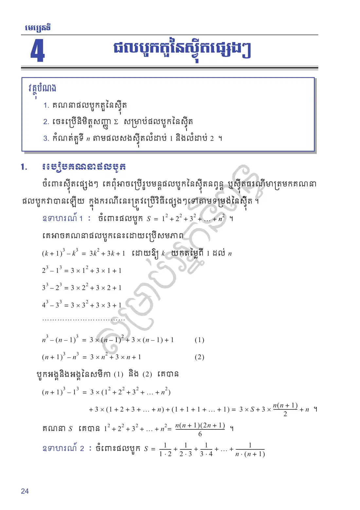
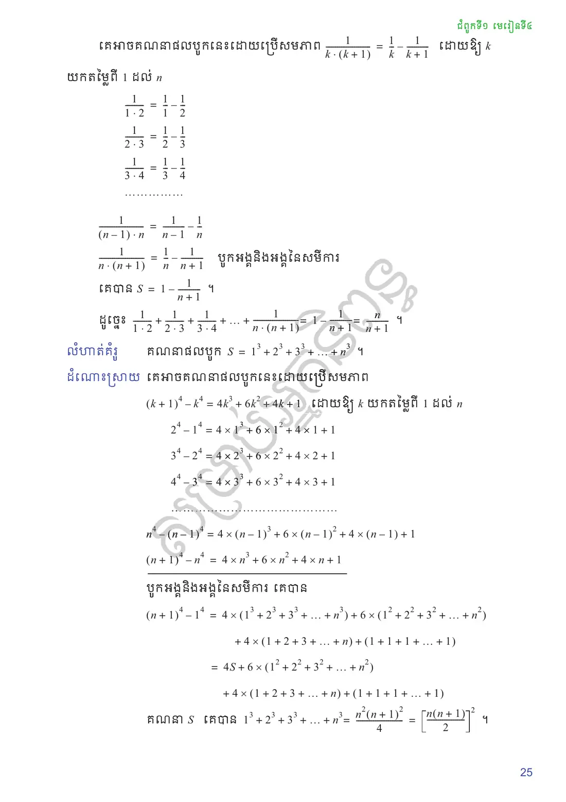
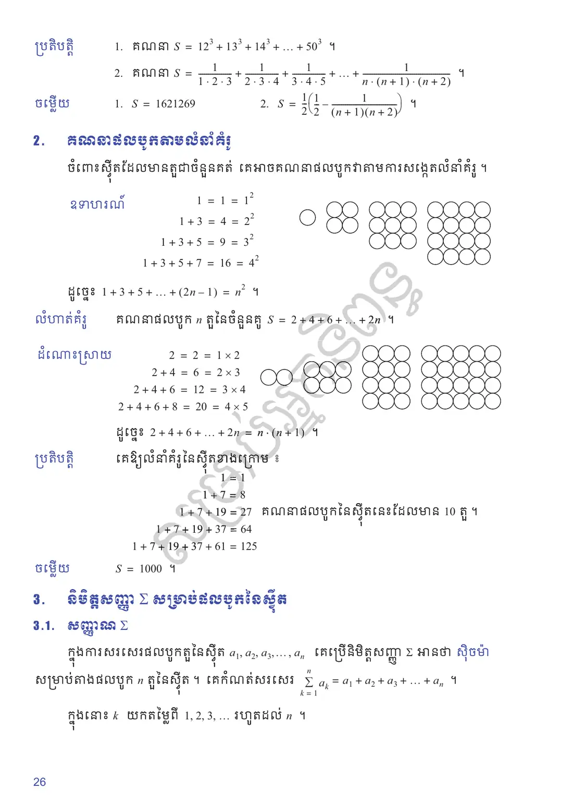
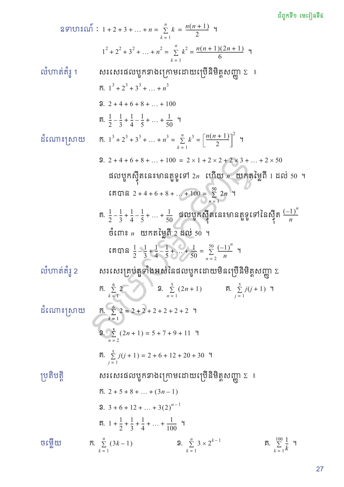
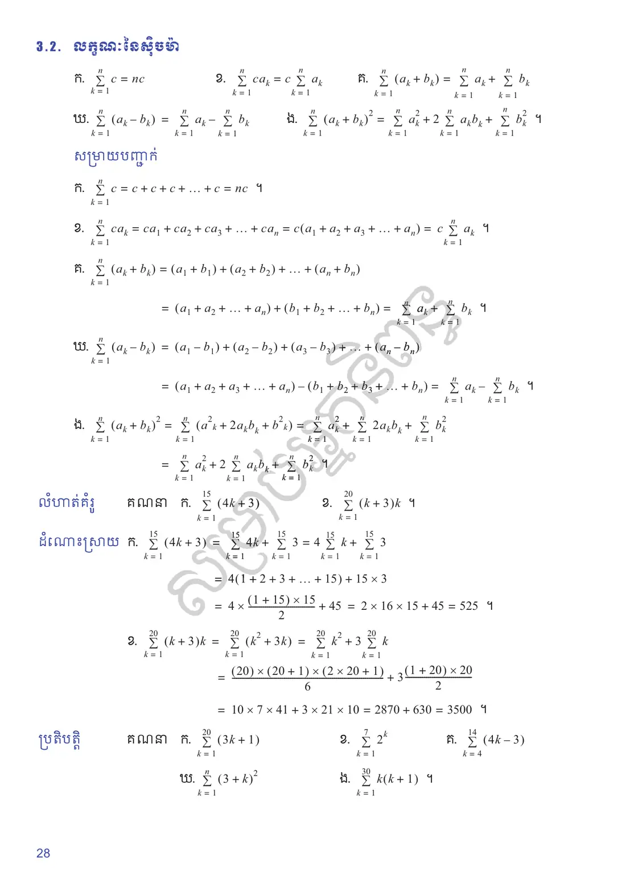
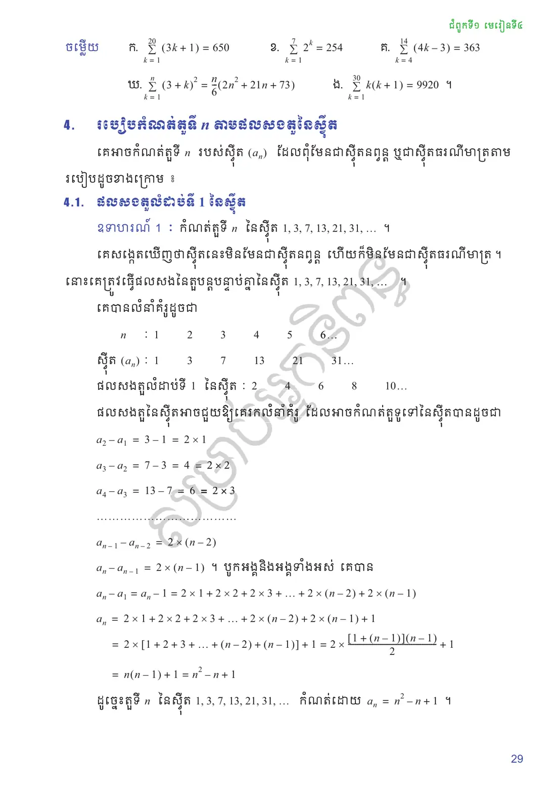
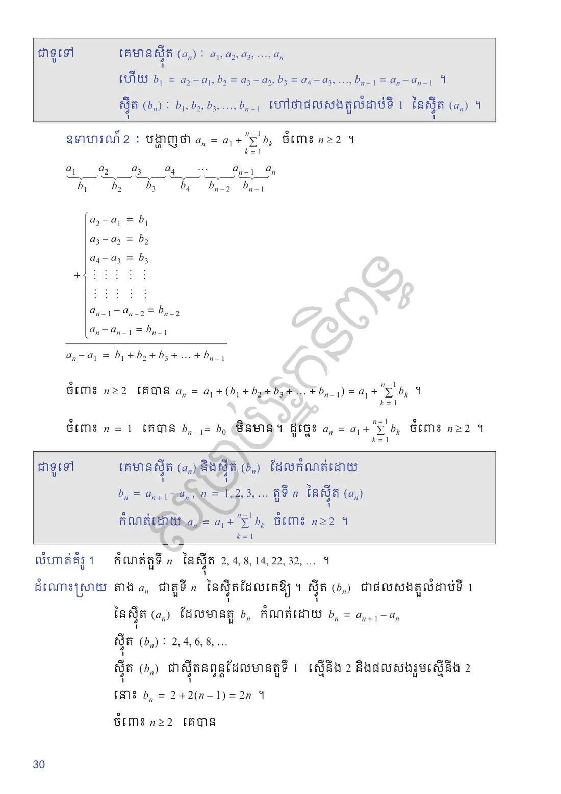
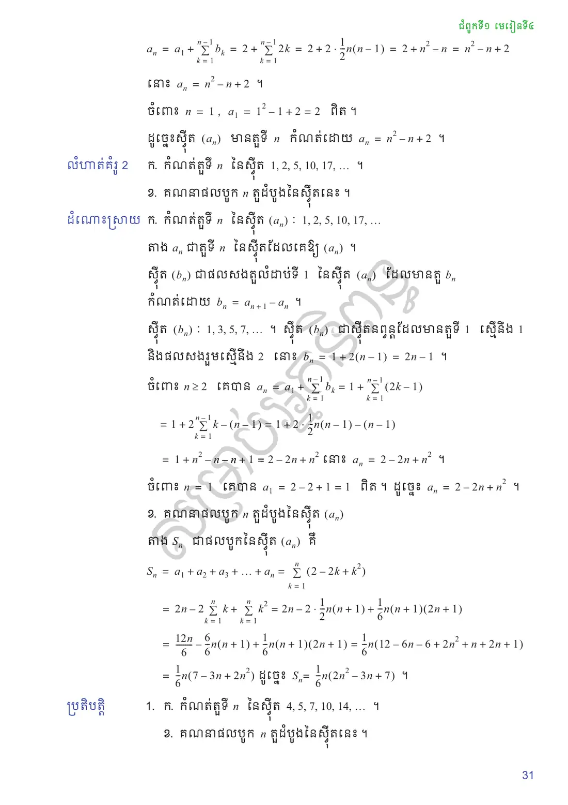
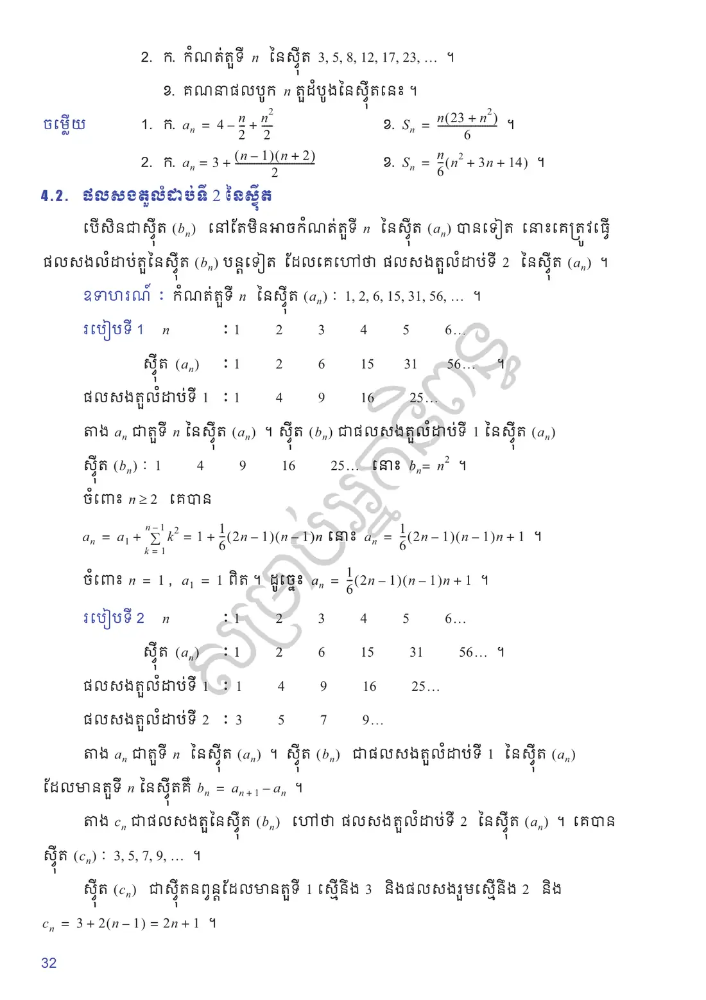
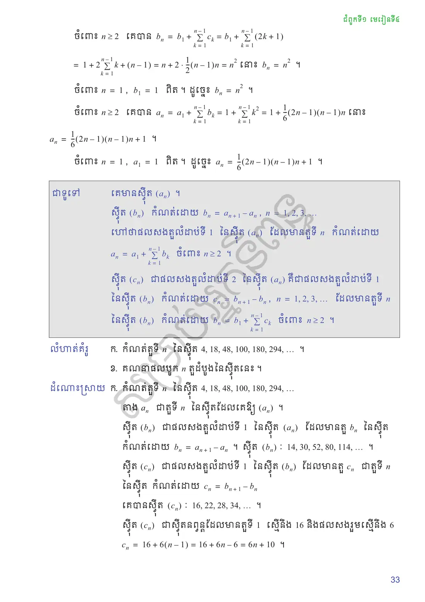
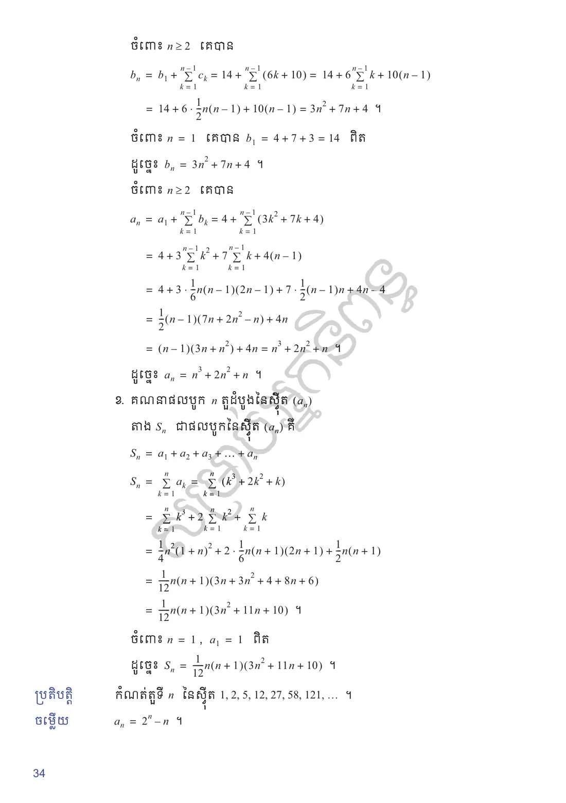
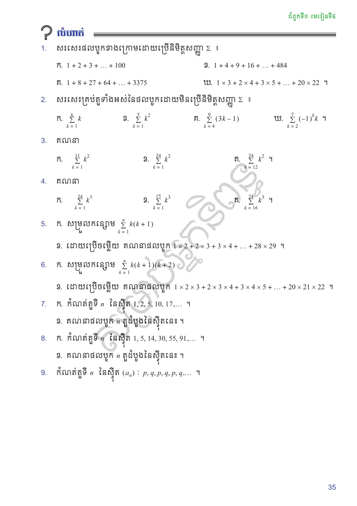
លំហាត់អនុវត្តន៍
សរសេរផលបូកខាងក្រោមដោយប្រើនិមិត្តសញ្ញា \(\Sigma\) ៖
\(1 + 2 + 3 + \ldots + 100\)
\(1 + 4 + 9 + 16 + \ldots + 484\)
\(1 + 8 + 27 + 64 + \ldots + 3375\)
\(1 \times 3 + 2 \times 4 + 3 \times 5 + \ldots + 20 \times 22\) ។
មើលដំណោះស្រាយ
\(1 + 2 + 3 + \ldots + 100 = \displaystyle\sum_{k=1}^{100} k\) (ផលបូកចំនួនគត់រាប់ពី \(1\) ដល់ \(100\))
\(1 + 4 + 9 + 16 + \ldots + 484 = 1^2 + 2^2 + 3^2 + \ldots + 22^2 = \displaystyle\sum_{k=1}^{22} k^2\) (ព្រោះ \(484 = 22^2\))
\(1 + 8 + 27 + 64 + \ldots + 3375 = 1^3 + 2^3 + 3^3 + \ldots + 15^3 = \displaystyle\sum_{k=1}^{15} k^3\) (ព្រោះ \(3375 = 15^3\))
\(1 \times 3 + 2 \times 4 + 3 \times 5 + \ldots + 20 \times 22 = \displaystyle\sum_{k=1}^{20} k(k + 2)\)
សរសេរគ្រប់តួទាំងអស់នៃផលបូកដោយមិនប្រើនិមិត្តសញ្ញា \(\Sigma\) ៖
\(\displaystyle\sum_{k=1}^{6} k\)
\(\displaystyle\sum_{k=1}^{5} k^2\)
\(\displaystyle\sum_{k=4}^{9} (3k - 1)\)
\(\displaystyle\sum_{k=2}^{7} (-1)^k k\) ។
មើលដំណោះស្រាយ
\(\displaystyle\sum_{k=1}^{6} k = 1 + 2 + 3 + 4 + 5 + 6 = 21\)
\(\displaystyle\sum_{k=1}^{5} k^2 = 1^2 + 2^2 + 3^2 + 4^2 + 5^2 = 1 + 4 + 9 + 16 + 25 = 55\)
\(\displaystyle\sum_{k=4}^{9} (3k - 1) = 11 + 14 + 17 + 20 + 23 + 26 = 111\)
\(\displaystyle\sum_{k=2}^{7} (-1)^k k = 2 - 3 + 4 - 5 + 6 - 7 = -3\)
គណនា
\(\displaystyle\sum_{k=1}^{11} k^2\)
\(\displaystyle\sum_{k=1}^{24} k^2\)
\(\displaystyle\sum_{k=12}^{24} k^2\) ។
មើលដំណោះស្រាយ
\(\displaystyle\sum_{k=1}^{11} k^2 = \dfrac{11(12)(23)}{6} = 11 \times 2 \times 23 = 506\)
\(\displaystyle\sum_{k=1}^{24} k^2 = \dfrac{24(25)(49)}{6} = 4 \times 25 \times 49 = 4900\)
\(\displaystyle\sum_{k=12}^{24} k^2 = \sum_{k=1}^{24} k^2 - \sum_{k=1}^{11} k^2 = 4900 - 506 = 4394\)
គណនា
\(\displaystyle\sum_{k=1}^{24} k^3\)
\(\displaystyle\sum_{k=1}^{15} k^3\)
\(\displaystyle\sum_{k=16}^{24} k^3\) ។
មើលដំណោះស្រាយ
\(\displaystyle\sum_{k=1}^{24} k^3 = \left[\dfrac{24(25)}{2}\right]^2 = (300)^2 = 90000\)
\(\displaystyle\sum_{k=1}^{15} k^3 = \left[\dfrac{15(16)}{2}\right]^2 = (120)^2 = 14400\)
\(\displaystyle\sum_{k=16}^{24} k^3 = \sum_{k=1}^{24} k^3 - \sum_{k=1}^{15} k^3 = 90000 - 14400 = 75600\)
សម្រួលកន្សោម \(\displaystyle\sum_{k=1}^{n} k(k+1)\)
ដោយប្រើចម្លើយ គណនាផលបូក \(1 \times 2 + 2 \times 3 + 3 \times 4 + \ldots + 28 \times 29\) ។
មើលដំណោះស្រាយ
\(\displaystyle\sum_{k=1}^{n} k(k+1) = \sum_{k=1}^{n} (k^2 + k) = \sum_{k=1}^{n} k^2 + \sum_{k=1}^{n} k = \dfrac{n(n+1)(2n+1)}{6} + \dfrac{n(n+1)}{2} = \dfrac{n(n+1)}{6}(2n + 1 + 3) = \dfrac{n(n+1)(n+2)}{3}\)
គណនា \(1 \times 2 + 2 \times 3 + \ldots + 28 \times 29 = \displaystyle\sum_{k=1}^{28} k(k+1) = \dfrac{28(29)(30)}{3} = 28 \times 29 \times 10 = 8120\)
សម្រួលកន្សោម \(\displaystyle\sum_{k=1}^{n} k(k+1)(k+2)\)
ដោយប្រើចម្លើយ គណនាផលបូក \(1 \times 2 \times 3 + 2 \times 3 \times 4 + 3 \times 4 \times 5 + \ldots + 20 \times 21 \times 22\) ។
មើលដំណោះស្រាយ
\(\displaystyle\sum_{k=1}^{n} k(k+1)(k+2) = \dfrac{n(n+1)(n+2)(n+3)}{4}\)
សម្រាយបញ្ជាក់៖ ប្រើរូបមន្ត \(k(k+1)(k+2) = \dfrac{k(k+1)(k+2)(k+3) - (k-1)k(k+1)(k+2)}{4}\)
ជំនួស \(n = 20\) ៖ \(S = \dfrac{20 \times 21 \times 22 \times 23}{4} = 5 \times 21 \times 22 \times 23 = 53130\)
កំណត់តួទី \(n\) នៃស៊ីត \(1, 2, 5, 10, 17, \ldots\) ។
គណនាផលបូក \(n\) តួដំបូងនៃស៊ីតនេះ ។
មើលដំណោះស្រាយ
ផលសងលំដាប់ទី ១ ៖ \(b_n = a_{n+1} - a_n\) គឺ \(1, 3, 5, 7, \ldots\) ជាស៊ីតនព្វន្តដែលមាន \(b_1 = 1, d = 2 \Rightarrow b_n = 2n - 1\) ។
ចំពោះ \(n \ge 2\) ៖ \(a_n = a_1 + \displaystyle\sum_{k=1}^{n-1} (2k - 1) = 1 + n(n-1) - (n-1) = n^2 - 2n + 2\) ។ (ពិតចំពោះ \(n = 1\))\(S_n = \displaystyle\sum_{k=1}^{n} (k^2 - 2k + 2) = \dfrac{n(n+1)(2n+1)}{6} - n(n+1) + 2n = \dfrac{n}{6}(2n^2 - 3n + 7)\)
កំណត់តួទី \(n\) នៃស៊ីត \(1, 5, 14, 30, 55, 91, \ldots\) ។
គណនាផលបូក \(n\) តួដំបូងនៃស៊ីតនេះ ។
មើលដំណោះស្រាយ
ផលសងលំដាប់ទី ១ ៖ \(4, 9, 16, 25, 36, \ldots\) មានតួទូទៅ \(b_k = (k+1)^2\) ។
ចំពោះ \(n \ge 2\) ៖ \(a_n = 1 + \displaystyle\sum_{k=1}^{n-1} (k+1)^2 = 1 + \left(\sum_{j=1}^{n} j^2 - 1\right) = \sum_{j=1}^{n} j^2 = \dfrac{n(n+1)(2n+1)}{6}\) ។
ដូចនេះ \(a_n = \dfrac{n(n+1)(2n+1)}{6}\) ។\(S_n = \displaystyle\sum_{k=1}^{n} \dfrac{k(k+1)(2k+1)}{6} = \dfrac{1}{6}\sum_{k=1}^n (2k^3 + 3k^2 + k) = \dfrac{n(n+1)^2(n+2)}{12}\)
កំណត់តួទី \(n\) នៃស៊ីត \((a_n)\) ៖ \(p, q, p, q, p, q, \ldots\) ។
មើលដំណោះស្រាយ
ស៊ីតនេះមានតម្លៃឆ្លាស់គ្នារវាង \(p\) (កាលណា \(n\) សេស) និង \(q\) (កាលណា \(n\) គូ) ៖
ផ្ទៀងផ្ទាត់៖ ចំពោះ \(n = 1 \Rightarrow a_1 = \dfrac{p+q}{2} + \dfrac{p-q}{2} = p\), ចំពោះ \(n = 2 \Rightarrow a_2 = \dfrac{p+q}{2} - \dfrac{p-q}{2} = q\) ។
សំណួរពហុជ្រើសរើស
ជ្រើសរើសចម្លើយត្រឹមត្រូវតែមួយ រួចចុច «ពិនិត្យ»។ ចម្លើយរបស់អ្នកត្រូវបានរក្សាទុកក្នុងកុំព្យូទ័រនេះ។
✎ សំណួរទី ១–១០
✎ សំណួរទី ១១–២០
តេស្តសមត្ថភាព ៖ មេរៀនទី ៤ ផលបូកតួនៃស៊ីតផ្សេងៗ (វិទ្យាសាស្ត្រ) — ២០ សំណួរ · ៣៥ នាទី